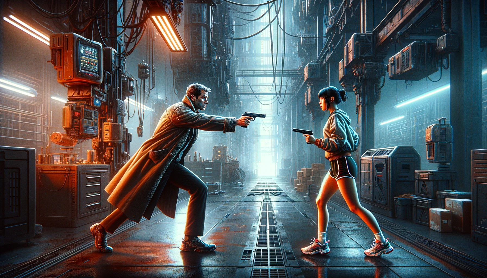

4. Traces in the Grid
Daylight in Dentino came filtered through miles of industrial haze and the shadow
geometry of arcologies that blotted out half the sky. Ventilation stacks
somewhere overhead exhaled a constant mechanical sigh into the canyon of
concrete and steel, mixing with the sound of rain battering the streets far
below. The district couldn't afford the plasma voxel holographics of upscale
sectors, so 3D ads were projected onto exhaust fumes, or rode the cascading
rain whenever the sky opened up. I felt about the city the way a man feels
about chronic neuralgia, a painful condition that had grown familiar enough to
accept as part of life.
I handed my informant a glowstick, and he eagerly fed on its mildly euphoric
haze while answering my questions between drags. Coltan had been born a
helfie, but years of smoking discarded butts off the street had left him with
permanent neurological damage. He didn't have much time left, and premium
neurochem wasn't going to change the outcome. If anything, it was a small act
of kindness in a currency that still meant something to him. My policy was
that if the hospitals turn a blind eye to you, then cops should ease up too.
Coltan gave me a sign of approval with a grateful puff.
That morning I was working the Baxley case. Thomas and Stella Baxley were a
laid-back couple living out their golden years in one of Minneapolis'
lavish neighborhoods, spared from the city's growing decay. They had the money
that could easily buy a skycar, if only they knew
how to fly one. Though skycars could practically fly themselves, the law still
required that a pilot remain seated behind the controls. Years ago, the
Baxleys solved that problem with an asynto chauffeur, whom they were
forced to give up alongside their skycar when the verinoetic ban took effect.
Now the only synthetic creatures left in their house were three cats who,
needless to say, couldn't drive. Their true pride and joy, however, was
the fourth cat, Lysander. He couldn't drive either, but being a genuine
purebred Birman was enough to make up for that.
For most people, real animals were an oddity, like modern paintings. They
offered little value at exorbitant prices, serving more as status symbols than anything
else. Technology had long since replaced them with cheaper addictions better
suited for modern life. But the Baxleys belonged to an older generation that
still fondly remembered living creatures from their youth.
Since money was never a concern for them, they dropped 1.5 mill
on a Birman cat, more than I made in three years.
Four days earlier, an intruder broke into the Baxleys' home, making off with
one of their synthetic cats. Although this particular syncat was a fairly
sophisticated model, it was hardly worth more than ten grand.
The Baxleys were convinced the thieves had actually come for Lysander and
mistakenly grabbed the ersatz Mirtzy instead.
Now the couple was terrified they'd return once they realized they'd stolen the wrong
cat. MetroNet police dismissed the whole affair as low priority property
theft, so the Baxleys came to me instead.
They offered me fifty grand to track down the thief.
That was enough money to dull whatever guilt I might've felt over not serving
a more virtuous cause. So there I was, chasing down a
stolen synthetic cat through the bowels of Minneapolis. In my line of
work, you take what you get to pay the bills.
Synpets come in two varieties. The organic models are biomimetic, living
beings
engineered to replicate animals down to their cellular level, mimicking even
behavioral patterns. Unlike for humans, the biomimetic process is
sophisticated enough for making them nearly indistinguishable from the
real thing.
The mechanical types are constructed from lightweight graphene alloys, elastic
resin and electronic components, including bio-gel circuits and
conductive polymers. They look convincing enough at a glance, but their
movements always carry a faint mechanical edge, and they are also
heavier.
However, what they lack in biological authenticity,
they compensate for with high-tech functionality. Their synthcores interface
with domestic security grids, roaming properties as autonomous watchguards
while relaying infosprites between omniscopes and sub-ether mesh systems.
They record and broadcast audiovisual telemetry, like mobile memory archives of
polymer endoskeletons and graphene musculature wrapped in synthetic fur.
In a world immersed in biohazards and industrial runoff, mechanoids also
serve as environmental scouts. They have fine-grade filters in their noses sampling the
air for toxins, or built-in Geiger-counters dancing to the tunes of radiation
spikes, to alert their owners of any danger lurking around. Most understand
human languages well enough to follow complex verbal commands, while
higher-end models can synthesize speech themselves, spooking out the older
generation who remember animals as dumb creatures. The Mirtzy cat
stolen from the Baxleys was one such tech-infused synpet.
When I inspected the Baxleys' home and their security setup, it was clear to
me that the thief was a professional. The system had been expertly bypassed,
which made it absurd to think that someone capable of such a feat
couldn’t spot the difference between a mechanoid mimicking a Russian Blue and
a genuine Birman. This made me suspect that the synthetic cat was the
actual target, not the overpriced fluffball named Lysander.
However, I kept this theory to myself.
Telling the Baxleys might make them reconsider my fee, and I had no intention
of letting fifty grand slip through my fingers. Better to play along and see
where the trail led.
But what could possibly make a burglar prefer a common mechanoid over a
$1,500,000 Birman? What was the real motive? The most logical step was to dig
into the stolen cat's history. Unlike the famously disorganized Bill Donovan,
the Baxleys were paragons of orderliness, who kept documents of everything
they had ever bought or received. The first thing I asked for was
the cat’s MAC address.
Just the day before my trip to Iowa, back in my office, I had fired up an extensive search
across the spriverse with this MAC address, to see who was interested in it.
Using only low-grade privileges, I didn't expect much, since these basic
searches often lead nowhere or drag on endlessly. So, imagine my shock when
the search instantly pinged
back, right from my office router! A week before, something had been probing my
network, hunting for this very MAC address.
Network discovery mode is a low-level, short-range protocol, stacked deep
below the spriverse, in a layer
where simple datagrams carry information without the
slightest clue as to their content. Among other things used usually for
diagnostics and maintenance, it allows querying for MAC
addresses, and by design the device with the matching
MAC address must respond to it. Now my office was almost four miles away from
the Baxleys. Why would anyone be looking for the cat there? The
answer was obvious: the thief didn't know where the cat was or who owned it,
but they knew that it was in Minneapolis, so they had methodically scanned the
city until they found it. When I returned from Iowa the day before, I decided to put this
theory to test.
After leaving the police station and snagging lunch at a local food court, I
made my way downtown, which was dense with public access points ripe for
tapping. Using a combination of technical gimmicks and small
bribes, I gained access to their logs where I could. A few hours later the pieces started
falling into place. Several access points had recorded network discovery
queries targeting Mirtzy's MAC address, all logged between one and two
weeks ago. Clearly, someone had been diligently searching for the cat,
and the recent heist was evidence that they'd found it.
To confirm my suspicions, this morning I returned to the Baxleys to
dig through their router logs. Since they had hired me, I didn't need to
bribe them, which was fortunate because I was running low on glowsticks.
I quickly found what I was looking for. Six days earlier, the Baxleys' network had
also received a discovery ping, and Mirtzy responded,
giving up its location to the perps. This was
the most recent timestamp I found, and the burglary took place just
two days later. The thief had probably spent that time casing the Baxleys'
residence, preparing for the break-in. But neither the Baxleys nor their
neighbors, nor any of their security cameras, had seen a thing.
Running out of leads there, I headed back downtown to pursue hotter
trails.
I fed the list of locations and timestamps I had found into my car’s computer
and set out to trace the thief’s movements through the city. With the dense
web of surveillance blanketing the streets, there was a good chance that at least a
few cameras had caught something useful. Knowing the exact times, I
was looking for people willing to share footage without too
many questions. Back in my car, I let the computer do the heavy lifting,
running through the recordings in search of a regular face or anything that
stood out. Somewhere in that footage was my target. It was just a matter
of pulling them from the crowd.
By late afternoon, I had locked onto a possible suspect. It was an
unremarkable utility drone, the kind that blended
into the cityscape without drawing a second glance. The images I pulled showed
nothing distinctive, just another machine lost in the swarm. In fact, there
was no telling if I was tracking the same drone or just one of a dozen that
looked exactly alike. But one like that seemed to swipe through the area
every time a scan was made.
"Yeah, I've seen it, Mr. Claymore," Coltan said, exhaling another ribbon of
neurochemical smoke into the rain-soaked air. "Looked ordinary enough, but the
flight path was wrong. That's why I remember it. It started near the base of
one of those tower blocks, then climbed straight up the facade like it was
scanning windows. Lost it in the fog above the transit
tiers. Minute later I saw it descend around another building and start the
same pattern again farther down the street. Almost looked like it was
searching for something inside those buildings."
"Did you notice anything unusual about it besides the way it flew?"
"Standard courier frame. Semingrol PEL 200 series, probably. Cheap hardware,
but reliable. It can operate autonomously, though my guess is somebody was
piloting it remotely."
That caught my attention. "How can you tell?"
"The flight profile was too irregular for synthcore navigation.
Besides, the PEL 200 still supports direct line-of-sight RF control.
Very useful if you want to avoid prying eyes in the 'verse.
Downside is the control range isn't very long."
This gave me some hope. "That means the operator had to be nearby, possibly
tailing it. Did you see them?"
"No one obvious," Coltan said, taking another drag from the glowstick. "But
they could've bounced the signal through a relay drone sitting high above the
smog layer. You'd never spot something like that from street level."
I thanked him with a handshake, slipping another two glowsticks into his palm
before leaving discreetly. Just before I turned the corner, I saw him
hunkering down inside a recessed doorway, the soft blue glow of the stick
illuminating the alcove while rain whispered through the street outside. Coltan
had a PhD in mechatronics, but he took a wrong turn at some point in his life,
and the city never forgave him.
This was the best lead I could come up with that day.
I spent the rest of the afternoon canvassing potential eyewitnesses along the
drone's flight path, hoping for a break, but no one could offer anything new.
Drones were so commonplace that people had learned to simply ignore them. By
evening it became clear that I had reached a dead end, and I needed a
fresh angle.
"Yeah, I've seen it, Mr. Claymore," Coltan said, exhaling another ribbon of
neurochemical smoke into the rain-soaked air.
The next morning I delved into the history of
the stolen mechanoid. By then it was obvious the burglars had specifically
targeted Mirtzy, but I had no idea why. Anybody with twelve grand
to spare could've picked up the same model from any large synpet
retailer without risking a felony break-in inside an upscale neighborhood. That
meant there was something uniquely valuable about this particular unit. The
question was what? Following the syncat's registration trail, I found out that
Mirtzy was produced by Hoshi Robotics, the Osaka megacorp famous for
manufacturing everything from industrial exoskeletons to domestic mechanoid
platforms.
The syncat had rolled off the assembly lines at Hoshi's Osaka K-1 compound on
July 11, 2051. Three days later it was containerized at the Port of Osaka and
shipped across the Pacific aboard an automated cargo freighter, making a brief
stopover in Honolulu before docking in Los Angeles on July 20. Customs cleared
it the following day, then it was transported to the LA Techno-Mercantile
Distribution Center where it was held over the weekend. From there it was
routed east through the continental high-speed freight grid toward
Minneapolis, and arrived at the Minneapolis Mechagerie two days later. On July
29, the unit was purchased by Elise and Carso Royder, long-time friends of
Stella Baxley. The Royders activated the syncat in their home on August 9 and
gifted it to Stella for her birthday the next day. Mirtzy remained part of
the Baxley household for only another twelve days before somebody slipped
past their residence's defenses and stole it.
I leaned back in my chair, thoughts racing. Smuggling was the only angle that
made sense. Something valuable had to be stashed inside the mechanoid, and
now someone desperately wanted it back. But the syncat had been
factory-sealed through its journey from Hoshi's Osaka K-1 compound to the
Royders' doorstep. That meant whatever Mirtzy was carrying had been installed
before it was packaged, right within the walls of Hoshi’s compound.
I ran a spriverse search, digging into what was publicly available about the
K-1 compound. Large corporations like Hoshi Robotics often operate sprawling
industrial complexes, some the size of entire cities. The K-1 complex was a
jumble of industrial sectors packed with administrative towers,
manufacturing buildings, and logistics hubs interconnected through private
transit grids and autonomous freight corridors. Mirtzy must've been
assembled inside one of those plants. But the same compound also included
Hoshi's Advanced Research & Technology Department.
My pulse quickened as I read through the details. Hoshi had manufacturing
hubs scattered across the globe and even on Mars and Helderstrome, but there
was
only one ART department in the entire Solar System, and it was right there in
the K-1 compound. The stolen cat was built in the same location where Hoshi's
top-secret research took place. There was no way that was just a
coincidence! If they smuggled anything out of that compound, considering the
length they've gone to recover it, it must've come from the ART
facility, and in that case it likely wasn’t just some exotic alloy
woven into the mechanoid’s skeleton. It was probably data from some
cutting-edge research stored in its memory chips; a clandestine gift
from Hoshi's brightest minds.
The possibility left a cold knot in my stomach. At least in the Solar System,
Hoshi was the apex of robotics innovation, since they rivaled even the Martian
enterprises in expertise.
Any industrial secrets leaked from their headquarters would shake up global markets and
compromise the already fragile interplanetary relationships, depending on
where the data ended up.
But that theory only made the case murkier. A quick search revealed that
the K-1 compound held an ISO 79001 Level 6 security classification.
Communication was tightly controlled through advanced firewall protocols and
packet inspection at the compound's network perimeter. Interceptor sprites,
supervised by elite sprikers, analyzed every incoming and outgoing
infosprite, making the strictest spaceport security check
seem superficial in comparison. In the physical world, employees were
screened upon both entry and exit for unauthorized data devices, which were
immediately confiscated, followed by severe disciplinary action.
The ART facility within the compound operated under the Level 8 security level.
According to the ISO standard, this meant the facility was air-gapped, with no
connections to external networks, not even to other parts of the K-1 compound.
Access to the data stored in its mainframes could only be initiated by
people physically present within the facility. Employees with critical
access levels lived on-site, and their implants were heavily restricted in
functionality to prevent any data from being stored. Whenever someone with
high-level data access entered the facility, the memory chips in their
headmasters were backed up and fully restored upon exit, ensuring that nothing
they heard or saw inside could be retained by their implants.
So, how had the thieves managed to infiltrate the ART facility, transfer the
data to the manufacturing plant, and escape without detection? I puzzled over
it for a while, but couldn't come up with anything better than a few wild
theories. The only evidence I could dig up was about
how they had tracked the mechanoid after it left
the K-1 compound, so I decided to focus on that.
I tried stepping into the shoes of the smugglers. They had shown formidable
hacking skills, so tracking the mechanoid to Minneapolis, even to the Royders'
doorstep, wouldn't have posed much of a challenge for them. But there, their trail
must have gone cold. The Royders had gifted Mirtzy to the Baxleys during a
private event, and hadn’t yet transferred the official ownership rights. The
deal was that the Royders would remain the legal owners throughout the
warranty period, in
case the mechanoid needed to be returned for repairs. Assuming the smugglers
tracked the cat to steal it when it seemed least guarded, they'd have
ended up at the Royders'. Hopefully, they left some clues there.
I reached out to the Royders to request access to their security records, but
they flat out refused. It was clear they didn't trust the police, and private
detectives even less. I lacked the authority to barge onto someone’s
property and dig through their router history, but this lead was too important
to ignore. With no other choice, I called Stella Baxley, hoping she
could help. She agreed to join me, promising she could make her friends change
their minds about me.
“Please don't hold it against them,” she said in an apologetic voice. “Elise
and Carso are good-hearted people, but they have endured more than their fair
share of misfortune. They were broken into once, and their home was ransacked,
with many valuable items stolen. The police never recovered anything or
identified who was responsible. I think they've lost all faith in law
enforcement. But I'm sure they'd also very much like to know who stole Mirtzy. After
all, they were the ones who bought him for us. Let me talk to them, and we'll
get this sorted out."
We arrived at the Royders’ residence half an hour later. Carso and Elise
welcomed us with the enthusiasm of a tax audit, but they let me in this time.
They couldn't say no to Stella. I opened my briefcase and connected
its built-in computer to their router, using the access code they gave me.
Keeping my head down, I worked quietly, doing my best to stay invisible. The
whole time Stella filled the air with light conversation to ease the tension.
The words washed over me without leaving much of an impression.
By early afternoon, my persistence paid off with three new clues. The first
clue dated back to August 8, the day the Royders activated Mirtzy. During its
initial connection to Hoshi’s server for registration and firmware updates, it
launched a single encrypted sprite to an untraceable destination, but clearly
outside Hoshi’s network. The second clue emerged on August 14, when multiple
MAC address discovery calls were logged within an hour near the Royders'
house. These calls matched the patterns I had seen in my own router logs and
in other cases around the city.
The third clue came just two hours later: a mysterious phone call from a local
number that appeared nowhere else in their call history. Given the timing, I
suspected it was linked to the scans. Since the logs provided no details
about the content of the call, my only option was to ask the Royders
directly.
We were sitting in their living room, where the mood felt only slightly more
cheerful than if World War 4 had just been declared. Carso and Elise sat
stiffly on the couch across from me, their anxious eyes drifting in my
direction whenever they thought I wasn't looking.
Stella Baxley lounged in a chair off to the side, trying to ease the
tension in the air.
Though I tried to keep my attention on the case, my detective instincts
wandered to the details around me. The house spoke of upper-middle-class
comfort, meticulously maintained, though clearly a step or two behind current
design trends. The spotless organization hinted at the skills of a
housekeeper beyond what robotic maids could offer. But it was precisely this
well-maintained state that made some glitches glaringly obvious.
The family portraits on the wall immediately caught my attention. Carso and
Elise’s photos were displayed prominently, taken when they were around fifty
years old. Between them was a picture of a young man, likely their son, who
looked to be about twenty. The arrangement, however, felt incomplete. The
blank space between the young man and his mother disrupted the symmetry, as if
something was missing. Looking closer, I noticed a small hole in the wall
where another picture must have once hung. Someone had deliberately removed
it. But who would take down a family portrait, and why?
I tried to push aside the distracting details, and asked
Royder about the phone call.
"It was an AI customer service call from the Minneapolis Mechagerie," he said
reluctantly.
"Hoshi Robotics had informed them that the mechanoid had stopped checking in for service updates and
wanted to know if everything was all right and if we were satisfied with the
purchase."
AI calls for routine customer satisfaction were standard practice, and there
was nothing inherently suspicious about it. However, considering the scans
that had occurred beforehand, I couldn't help but feel concerned.
"How do you know it was from the Mechagerie?" I asked.
"They identified themselves with detailed information about the purchase,
including the robot's serial number," Royder replied. "Other than that, I
can't say for sure. It was an AI call, so there was no video. They didn't
ask for any personal information, though. They just wanted to know if I was
satisfied with the mechanoid and why it was no longer checking in."
"And what did you tell them?"
"I said the mechanoid was a gift for someone, that as far as I knew, it was
working fine, and that if there were any issues, I'd contact them. I also
told them I'd appreciate it if they stopped bothering me about it in the
meantime. That was all, really." He turned to Stella. "I was careful not to
mention any names. Nothing that could trace the cat to you, Stella."
He was obviously worried that he might somehow
be blamed for the burglary. Stella stepped in quickly to reassure him.
"It’s all right, Carso," she said with a warm, convincing smile. "Nobody
thinks you had anything to do with it. And even if we never see Mirtzy again,
I still truly appreciate your kindness in giving me such a nice gift."
Carso Royder buried his face in his hands, and Elise started sobbing. There
was something unsettling in this, as emotions were flying way too high for
such a minor loss. Stella moved to Elise’s side, wrapping her in a
comforting hug as she tried to console her.
My next question seemed to take them by surprise.
"Can you describe the voice you heard?"
Royder frowned, clearly puzzled. Why would anyone care about the voice from an
AI call, especially when it could be designed to sound like anything?
"I’m asking," I said, "because I have a reason to think this might not have
been an AI call. You could've been speaking to a real person pretending to
be a customer service AI from the Mechagerie."
Yes, we live in an age when sometimes people "impersonate"
(immachinate?!) machines. The line
between human and machine is getting increasingly blurry.
"There was nothing remarkable about it," Royder said nervously. "Female voice,
young, kind of high-pitched. Perfect accent, maybe with a touch of an East
Coast vibe." That sounded strange, since the youngest survivors from the East
Coast were now in their sixties. But Royder seemed uncertain, so I decided not
to read too much into that.
"A few hours before the call," I asked, leaning forward a little, "did you
notice any cars hanging around? Maybe parked nearby for no good reason?"
Neither Carso nor Elise did, and it was also clear they
had no idea where I was
going with all this. I decided to keep what I found in their router logs to myself
for now. Telling them would just add to their stress, and it wasn't like they
could do anything about it anyway.
With my business here wrapped up, I was ready to leave. Stella offered a warm
and encouraging goodbye to her friends, which quickly escalated into what felt
like an opera in three acts. The Royders kept apologizing, insisting they felt
responsible for the theft, while Stella worked tirelessly to reassure them
that everything would be fine.
"I’m sure Mr. Claymore will figure out who did it and catch them," she said
with unwavering confidence.
Carso Royder glanced at me, his expression a mix of doubt and despair, as if
to say that if I was their best hope, they might as well hang themselves.
★ ★ ★
I grabbed lunch from a ramen joint wedged between a pharmacy and a repair
kiosk, its bright holo-sign promising Authentic Taste, Safe Ingredients. The
place ran on efficiency, with prep bots slicing synthetic meat and cracking
lab-grown eggs into steaming broth that smelled better than it had any right
to. I ordered a bowl of their house special, and got a mix of noodles, synthetic pork
slices, and a soft-boiled vat-grown egg floating on top.
It was the best thing that a hundred bucks could buy you in this city.
The cashier, a young
guy with a glowing wrist implant, handed me the steaming container with a
practiced nod, and I drove back to my office.
The drive gave me time to think about my visit with the Royders. Their
reaction to the theft kept bothering me. I could understand the Baxleys were
upset, but the Royders looked genuinely rattled, as if their home
had been broken into. Before leaving, I'd mentioned this to Stella.
"Elise and Carso have faced a long string of tragedies, none of them their
fault," she explained. "Disasters strike all of us, even when we do nothing to
invite them, and when you have millions of people, someone is bound to have
more than their fair share of misfortune. It's not magical or
extraordinary, just statistics. But for those who suffer, it feels
different. They always search for an explanation and struggle to accept bad
luck as the reason. Elise and Carso are convinced
they carry some kind of curse that draws trouble to them. I think
they are blaming themselves now, believing the break-in happened because of
the gift they gave us."
I nodded in agreement. Stella had the kind of twentieth-century
common sense that had carried people through the war and the difficult years
that followed. Without that, they'd have been lost.
"But if fate played any role in this," she went on, "for me, it was good luck,
not bad. If we hadn't had Mirtzy, the burglars would've taken
Lysander instead. That would've been a real disaster. I just wish Elise and
Carso could see it that way."
Well, all that common sense didn't stop some sentimentality from slipping in through
the ventilation ducts, but that was probably for the best. For now, I let her
hold on to that belief. Not ready to tip my hand just yet, I thanked her for
her help and headed off into the city.
I was sitting in my office, picking at my ramen while my thoughts drifted back
to the Royders. Something about that visit didn't sit right. I could've
asked Stella about it, but since I had no official reason to dig into their
past, I figured it was better to do my own searching. As I worked through the
bowl of steaming ramen, I started a sprite search to build a public portfolio
of their family.
Carso and Elise had two sons. The older one, Declan, whose portrait I had seen
with his parents, became an accomplished exospace systems architect,
contributing to humanity's efforts to explore and colonize new worlds. He
died during the atmospheric entry of an uncharted planet, staying at the
controls long enough to stabilize the shuttle and give the rest of the crew a
chance to escape. His sacrifice made him a hero, and the colony on that planet
was named Royder's Rest in his honor, though this was little consolation for
his grieving parents.
The younger son, Caleb, was the complete opposite of his brother. He never
held an honest job and sank deep into the underworld, dealing in
synthetic organ trafficking, bioweapon smuggling, cyber-terrorism and
the likes. His most infamous act was his role in the
bombing of Armstrong Terminal on the Moon, a crime that earned him
a life sentence without parole. He was now serving time in a
high-security prison located deep within the asteroid belt.
I sifted through his mugshots. There were plenty. He looked a lot like his
brother on the surface, but his eyes told another story. They carried a mean
streak, a feral edge, like a man who had nothing but contempt for the world.
He didn't fit in with his family, who seemed to have disowned him.
"Well, well," I muttered, "the missing family portrait."
That was enough of Caleb. I turned back to the real problem and went over the
three clues I had found at the Royders. The rogue sprite Mirtzy had sent was
most likely telemetry, programmed by the perps to reveal its location once
it settled with a new owner. Mechamoids, much like real cats, tend to stay in
one place, so the criminals must've assumed a single sprite would be enough
while keeping their tracking efforts discreet. They hadn't counted on Mirtzy
being passed along as a gift. That mistake sent them to the Royders six days
later, where they launched a flurry of discovery packets.
When Mirtzy didn't respond, they resorted to a phishing call, posing as a
customer service AI to learn more. With so much at stake, they had probably
considered a more aggressive approach, one that could've ended badly for the
Royders. Luckily for them, they must've let slip just enough details during
the call to convince the criminals that violence was unnecessary. Instead,
they started to scan the city, and found their missing mechanoid five days
later.
By this point, I was so confident in my theory that I didn't even bother
calling the Mechagerie to confirm whether they had made that phone call.
Instead, I traced the number from the Royders' phone log. It led to a public
communications booth on the outskirts of the city.
I drove out there immediately, scouring the area for cameras, CCTVs, or anyone
who might've seen something useful. With the city buried under a dense web of surveillance thanks to its crime rate, I expected this to be a simple task.
But no matter where I looked, I found nothing. None of the surrounding cameras
had a line of sight on the booth, and the station’s own lens had been covered
with a wad of chewing gum.
Astonishing! Somehow, the perps had managed to find what was likely
the only comms station in the city outside the surveillance grid.
That meant they had an intimate knowledge of our urban maze, something not
even life-long residents had. Only sprikers.
I was down but far from defeated. As the shadows of Saturday evening began to
stretch across the city, I returned to my office, driven to keep pushing.
Traditional surveillance methods had failed me, but there was one tool the
culprits couldn’t dodge: our eyes in the skies. In response to the rampant
crime wave following World War III, we had initially deployed a
swarm of low-altitude satellites snapping photos of every major urban expanse.
Then after the growing amount of dust in the atmosphere due to the new industrial
revolution had made orbital photography useless, we switched them to
dirigibles gliding overhead, equipped with high-resolution cameras and
continuous video feeds, capturing everything below. They also doubled as
noisy billboards, a constant annoyance to the citizens, because why not.
Naturally, the perps were aware of our aerial surveillance. Apart from being
outside the range of public cameras, the comms station was tucked away on a
narrow street, flanked by tall buildings, making sure it was only visible if a
blimp was directly overhead. I suspected they timed the call for when the
skies were clear. But they had to get there somehow, likely by car, parked
nearby, maybe just around the corner. Even if I couldn’t spot the caller, I
might still catch their vehicle.
I looked at my wristphone. It was almost 8 p.m., and Captain Kembry was likely
still in his office. I sent him a message asking for temporary search
credentials. Kembry was my handler at the department, and he knew me well
enough to approve requests like that without asking questions. True to form,
five minutes later I got a notification from LEAGNet that my credentials were
active and valid for the next 24 hours, allowing me to access almost
every municipal database, short of corporate black vaults and military
archives.
Using the credentials, I dived into the municipal aerial surveillance
footage. I had to pore through a lot of footage, even
knowing the time and location, but for this, I could leverage the help of
Spencer and even Vivien, who was always available to help out remotely.
Synthcores are very good at visual processing, working about a hundred times
faster than humans, and with their help, I quickly found what I was looking
for.
As suspected, the comms station was out of the blimps' field of view at the
time of the call, but a photograph taken two minutes before showed a limousine
parked about 500 feet from it. The car wasn't there in the
picture taken seven minutes earlier and was already gone in the next one, taken
eight minutes later. Each photo came with a one-minute low-res video feed, but
those didn’t reveal any further details. Luckily, the photos themselves were
high-quality terapixel shots, and with some magnification, Spencer managed to
read the license plate number. It was a rental from the high-end chain Urban
Elite Rides.
I dialed the company, and after verifying my police authorization for routine
information access, the 24/7 AI assistant gave me the vehicle’s
rental records. At the time in question, the car was rented by a woman called
Jennifer Fumiko Takahashi. This had me firing on all cylinders! A few more
queries with my police-boosted infosprite, and I learned that in the last few
days Ms. Takahashi was accompanying a certain Seijun Shishido, who had flown
in from Japan on August 13 and returned there just two days ago. Gotcha!
In the last few days Ms.
Takahashi was accompanying a certain Seijun Shishido, who had flown in from
Japan.
Further spriverse research on Seijun Shishido confirmed my suspicion that he
was indeed the man I was looking for. Hailing from Osaka with a background in
cybersecurity, Shishido's early career featured a few internships, but he
never settled into a regular job. For years, he branded himself as a start-up
entrepreneur, but I suspected that was just a front, and he was likely
moonlighting as a freelance operative for various shadowy organizations. He
had a reputation as a troublemaker, with numerous bar fights and back alley
brawls to his name.
Some accusations were even darker. Years ago, his fiancée disappeared without
a trace. Weeks later, she was found dead, her body mangled and showing signs
of brutal torture. The case reeked of something personal, but Shishido had an
airtight alibi. At the time of her disappearance, he had been under police
surveillance, which left investigators with nothing to pin on him. In fact,
despite all his history, he had been arrested only once, for
savagely beating up a man in Tokyo merely for mocking his Kansai accent. One
thing was clear: Shishido-san had a short fuse and was not someone to be
trifled with.
Shishido arrived the day before the incident at the Royders' residence
and hired Takahashi as his chaperone—his guide, interpreter,
driver, and bodyguard, all in one. In Japan, Shishido might have been a
formidable figure, but every country's criminal landscape poses unique
challenges, and if someone is not familiar with the local streets, they can
easily bury even the toughest. Chaperones are typically hired from official
agencies to assist and safeguard people, especially foreigners, on sensitive
business. Jennifer, however, was a freelancer, with little experience and no agency backing.
An attractive woman in her early twenties, her
background was murky. I suspected she had dabbled in various low-end jobs,
accumulating street savvy as she sought to step up to a more dignified role. I
understood her type all too well, since I was in the same boat.
Jennifer, a fledgling chaperone, was an easy mark for Shishido, who was
orchestrating a burglary. Official chaperones would never engage in criminal
activities and would likely turn their clients over to the police. But
Shishido required someone willing to handle the dirty work, as his weak
English and lack of North American know-how weren't enough to pull off such a
complex scheme. I was convinced that it was Jennifer who made the phishing
call, deployed the scanning drones, and neutralized the Royders’ security
system, paving the way for Shishido's entry. Apart from that, Shishido
probably kept her in the dark about the true value of the mechanoid.
After concluding their business, Shishido and Jennifer parted ways.
Satisfied with a successful mission, Jennifer probably set out in search of
her next client. Meanwhile, Shishido made a rapid return to Japan. Eschewing
the usual supersonic flights, he opted instead for a sub-orbital shuttle,
cutting the journey from Seattle to Tokyo down to just 45 minutes. This hasty
and expensive choice was probably driven by more than just urgency. It allowed
him to evade regular customs inspections, which could've raised difficult
questions about the stolen mechanoid in his possession.
I slumped back in my chair, turning the pieces over in my mind. The break-in
finally made sense, but one detail refused to fit. If the perps knew the Royders had
given the cat away, why waste time scanning half the city? The obvious place to
start would've been the Royders' closest friends. Finding them through the
Spriverse couldn't have been difficult, and the Baxleys were at the top of that list.
The most logical explanation was that finding the mechanoid was Jennifer's
task. Chaperones billed by the hour, and I couldn't shake the
feeling that she'd quietly stretched the search for her own benefit. If I was
right, she'd made a fatal mistake. A chaperone's reputation could survive
helping a client commit a petty crime, but cheating that
same client was career suicide. Loyalty was the one commodity her profession
couldn't afford to lose. If word got out that she'd been milking the
clock, nobody would ever hire her again.
I filed the thought away. If I ever ran into her, it might prove useful.
As I was staring at the ceiling, I started to weigh my options. The
Baxleys paid me to find out who broke into their house. Now I had an answer.
But what good was it? Shishido was long gone, out of my reach. That left
Jennifer, who was likely from this city, but hauling her in alone felt like a
raw deal. If she had to take the fall, Shishido should be right there with
her. He was the real player in this. But how was I supposed to explain why a
Japanese spriker hopped a flight to Minneapolis just to swipe a
ten-grand syncat from a suburban home?
The Hoshi breach was nothing but a hunch, and the more I thought about it, the
more ridiculous it sounded. Nobody had ever cracked a Level 8 security
facility, at least not that the public knew about. If I started throwing
around accusations like that, I’d better have something to back them up.
And to get there, it would be wise to run my theory by someone more
knowledgeable.
My sprites had been useful in Freddy’s case, but
this time I needed to be discreet. Broadcasting my investigation into a
possible Level 8 breach across the spriverse was too risky. The wrong
people might take notice, and the stakes were high.
That meant doing things the old-fashioned way, which suited me just fine. I
needed someone capable of listening, thinking, and talking, and in precisely
that order.
Since it was already evening, the bars were filling up for the night, and I
decided to try my luck there.
Now that I knew the identity of my targets, the hunt began.
5. On the Trail of Ghosts
I strolled through the streets of Dentino, the air thicker with fog than
usual.
The skyscrapers rose into the haze, their tops vanishing as if they were endless pillars propping up the heavy sky.
The neon glow of the city diffused through the mist, casting an ethereal haze over everything, leaving the night barely darker than the day. The atmosphere reminded me of an interstellar nebula, the kind humanity was exploring out in the expanse, though I hoped those didn’t smell this bad.
The air carried the electric tang of burning circuits mixed with the metallic
bite of coolant and the greasy scent of food sizzling on open griddles, blending into
a chemical cocktail that belonged to the city as much as the skyline itself.
The people in this sector weren’t the poorest, but they lived on the lower
rungs. They could afford cybernetic implants, but not the luxury of concealing
them. Exposed servos clicked with every step, optic implants pulsed with
shifting readouts, and mechanical limbs gleamed under cheap city fluorescents.
More than once, I had to look twice to tell if I was passing an enhanced human
or a machine.
The Smoking Circuit was styled to look
like an Art Deco spaceship, lined with glowing light strips, tossed
between two utilitarian, industrial-design buildings
My destination was a bar called The Smoking Circuit. It was styled to look
like an Art Deco spaceship, lined with glowing light strips, tossed
between two utilitarian, industrial-design buildings that made it seem even
more out of place. I walked in and was greeted by cool, ambient lighting that
bathed the bar in deep blue hues, a welcome contrast to the vivid fluorescents
of the city. The soft hum of conversation blended with the smooth rhythm of
synthetic jazz playing in the background.
A bartender with silver-plated fingers mixed drinks with precise, mechanical
efficiency, pouring iridescent liquid into lowball glasses that refracted
light like cut diamonds. A thin layer of smoke hung over the heads of the
patrons who hunched over their drinks, lost in conversation or their augmented
reality interfaces. The bar itself was a mixture of chrome and dark synthetic
wood, polished surfaces contrasting with grimy walls covered in holographic
posters that flickered and swayed like living graffiti.
I spotted the man I was looking for almost instantly. Johnny5 was sitting in
his usual cube, a glass half-filled with a celestine-colored spirit fizzing
softly in front of him. His black hair fell in loose strands framing his pale
face, hiding all but the crimson gleam of his glasses. As always, he wore
black jeans, his signature hat, and an impeccable vest that left his arms
exposed, the fluorescent tattoos glowing in perfect sync with the color of his
drink.
These days, his full name was Johnny5.2-RC3, a legal alias he changed every
time he installed or upgraded an implant. He liked to keep himself on the
cutting edge, rewriting himself as technology evolved. It also drove the
bureaucrats insane, which only made him love it more.
By trade, he was a hypernet architect and omniscope designer, and a darn good
one too. He designed protocols and data structures more like an artist than
as an engineer, and his omniscopes were
immersive illusions, layered with such depth and detail that viewing them felt
like walking through a gallery of baroque exuberance. He made more money in a
month than I did in a year, and he did it all with the kind of effort
most people spent on deciding what to eat for lunch.
These days, his full name was Johnny5.2-RC3, a legal alias he changed every
time he installed or upgraded an implant.
He was also a bootlegger. He and a few of his buddies cooked Dream Dust, a
homemade alternative to the overpriced Somniva and REMital brands. These were
psychedelic dream enhancers that nudged serotonin, dopamine, acetylcholine,
and a few other neurotransmitters just enough to turn an ordinary night's
sleep into something worth remembering.
A mild drug with some addictive potential but no worse than
alcohol, it was legal to use but illegal to manufacture privately. Officially,
the ban was for health and safety reasons, but in reality, it was to protect
the corporate-controlled market.
I stumbled onto their operation back when I still carried a badge, but after
some digging, I saw they kept their quality high and their clientele both
small and local. They weren't doing it for the money, because just like
Johnny5, they had plenty. For them, it was an act of defiance against the
corporations that had carved the world up for themselves.
Compared to the crimes that went unpunished every day, this barely made a
blip, so I let them be. Johnny5 has owed me ever
since.
Johnny5 didn’t look up when I approached. He just swirled his drink, watching
the bubbles rise with a lazy fascination.
"Well, well," he said nonchalantly, "if it isn’t Drexel Claymore, patron saint
of lost causes. Take a seat, or are you just here to remind me that my
lifestyle is unsustainable?"
"I’d never dream of it," I said while I sat down. "You’re a model citizen and
a shining example of
financial responsibility. Wouldn’t want to ruin the illusion."
Johnny5 smirked and gestured to the bartender with two fingers.
"You’re drinking. No arguments. The house special tonight is something
distilled from an off-world fruit, guaranteed to make you question your life
choices."
"I already do that daily. But I’ll take the drink." With that, another glass
rose from the built-in dispenser, filled with the same celestine-colored liquid
that shimmered as I turned it in my hand.
"This looks like something that should be powering a reactor, not served in a
glass," I said, examining the drink in the glass with some apprehension.
"Tastes better than it looks," he said with an engaging smile. "And I can
personally confirm it won’t kill you. Probably."
I took a sip. The taste was sharp, citrus and metal, like biting into an
electric current. It settled with a warmth that felt almost narcotic.
"Alright," I admitted, setting the glass down. "Not bad. And I can still feel
my tongue, which I take as a good sign."
Johnny5 leaned back, tipping his hat just enough to suggest he had all the
time in the world.
"So tell me, Drexel, are you just here for the ambiance, or is this one of
those nights where you ply me with drinks before the interrogation
starts?"
I smirked and took a slow sip. "If you consider this an interrogation, at
least it's a step up from a black-site basement." I gestured around the bar.
"The decor is vastly better than the standards there,
and the drinks don't come with a side of broken teeth."
Johnny5 laughed, then took a deep pull from his glass, as if to prove his
willingness to cooperate. One sip led to another, and I joined in, though I
kept my intake measured enough to keep my thoughts sharp.
We let the
conversation drift, touching on mundane topics such as the latest hypernet
scams or the absurd price of synthetic coffee, or celestial ones
like the rise and fall of another deep-space
mining startup.
As the conversation flowed, I carefully nudged it toward
a recent heist at Orinova Labs, a
biotech firm out of São Paulo.
I had done my homework on it before coming here, and I found it a good topic
to
set the stage for discussing the Hoshi breach.
Orinova was a mid-sized but influential biotech company specializing in
genetic optimization and neural augmentation therapies. Their research focused
on custom DNA modifications aimed at enhancing cognitive function, physical
resilience, and disease resistance. The heist happened when an insider at
Orinova extracted classified data on an experimental genetic rewriting
protocol. The stolen data was quietly sold on the black market, where
underground biohacking clinics and illicit augmentation rings began using it
to create unregulated genetic enhancements.
However, some critical regulatory sequences were missing, leading to unstable
genetic mutations that caused catastrophic cellular breakdown. As a result,
many of the patients died. When the police began investigating these
deaths, they uncovered traces of the unauthorized genetic modification. This led
back to the stolen data, exposing the breach at Orinova, which had remained
unaware until then.
Johnny5 had heard about the breach but could not recall the details.
As I spoke, he pulled up the information through his implants, his left
fingers tapping out commands on his palm like a violinist’s hand dancing
across the strings. Tiny capacitive sensors beneath his skin registered every
touch, translating the motion into input. He had thought-control implants,
but even for him, they were sluggish and mentally draining, and like most of
us, he preferred the reliability of his hands. The signals traveled through
encrypted NFC to a concealed microcomputer inside his belt buckle, which
processed the request. Within seconds, his retinal implant, completely
invisible to the outside observer, overlaid the results as monochrome text and
pixelated graphics onto his right field of vision.
His wearable tech and implants made
sure that Johnny5 was always the smartest guy in the room.
I knew that for someone always chasing the next technological leap,
Johnny5 was never satisfied with wearable gear. He wanted implants all the
way, but the technology had yet to catch up with his desires.
Powerful microchips required more energy than the human body could
supply, and the heat they generated could not yet be safely dissipated without
damaging tissue. As such,
Johnny5 eagerly awaited a future where advanced neurovoltaic induction
cores and heat-conductive
nanotubes solved these problems, allowing
him to finally ditch the buckle computer for a fully internal system.
After that, he'd change his name to Johnny6.0.
When I finished my story, he grinned. "That’s what happens when you strip out
the autoregulatory cascade buffers and start rewriting epigenetic markers.
Clients turn into organic slurry. I keep telling you, metal and plastic are
the way to go. No one is messing with my double helix, thank you very
much."
It was a joke, of course. Implants and genetic enhancements served different
purposes, but society remained divided on which was safer and more ethical.
But from the tone of his voice, I could tell the alcohol was working on Johnny5 in
just the right way, and it was time to get down to business.
"That's not the point," I said, watching him over the rim of my glass.
"Orinova's biotech was safe enough in the right hands. The problem was that
their facility was breached, the tech was stolen, and it ended up being used
by people who had no idea what they were doing."
I set my drink down and leaned in slightly. "Which actually gave me an idea.
I'm working on a case, and I have a lead, but my theory only holds up if there
was a similar breach at the Osaka ART facility of Hoshi Robotics. A data
theft, something off the record. I'm wondering if there could be a
connection."
I already knew there wasn't, but I enjoyed playing naive. Johnny5 loved
putting naive people in their place, and that made him talk more than he
realized. That was exactly what I needed.
He took a few seconds, pulling up the details. Then I saw his eyebrows
rise.
"Stealing from Level 8 security? Why don’t you change your theory to
something more plausible, like riding unicorns on rainbows?" Johnny5 smirked
in his smart-ass way.
"Why not?" I asked, keeping my expression as innocent as possible. "If someone
could break into Orinova’s ART department, why not Hoshi?"
That was the hook, and he had bitten down
hard. He leaned back, shaking his head.
"Drexel, the Advanced Research and
Technology building of a hundred-trillion-dollar company is not in the same category
as the frat-boy science fair of a venture-backed start-up. Whatever gave you
the idea that you could compare the two? You're smarter than that."
"I was thinking, those trillion-dollar companies that truly care about privacy
and security would run their research operations on a deep-space station. If
it's here on Earth, it must have weaknesses."
Johnny5 swirled his drink, letting another smirk creep onto his face. "That building
may be on Earth, but believe me, it's just as sealed off as a deep-space lab.
Anything that goes in or out is checked with the most stringent compliance
protocols you can imagine. Employees live on-site with their families and
rarely step outside, but when they do, they're screened like a germaphobe
inspecting a public toilet after a plumbing malfunction."
"They live in the building all the time? That sounds more like a prison. Why
would they do that?"
"Have you ever seen any of those buildings?
I got a look at Cynex's ART facility in Pacific City once, from far away,
of course, and it looks like a mountain. Two thousand feet high and nearly
a mile wide on each side, and I doubt that Hoshi's research center is much
smaller. They have everything inside. Schools, hospitals, shopping centers,
even stadiums, race tracks, and water parks. All of it top quality, nothing
like the charming decay we have here in this pathetic excuse of a city.
Japan might not be
choking on pollution the way we are, but their standards are also higher. If
you lived in one of those towers, why would you ever leave? The outside
world is a mess. Inside, they have everything except bad weather and the
character-building experience of public transportation."
It was hard to argue with that. Those megastructures were no more restrictive
than a space station or an off-world dome city, and plenty of people would
sell their souls for a one-way ticket to space. Given the alternative, spending the
rest of your life in an all-inclusive luxury compound on Earth didn't sound
half bad.
"So how should a potential data theft work?" I asked. "And why
would it fail?"
Johnny5 had just enough alcohol in his system to humor me, despite his
skepticism, so he gave it some thought. His fingers were ghosting across his
palm in quick, deliberate taps as he processed the question.
"That K-1 compound is massive, more like a self-contained city, and the whole
area runs on Level 6 security protocols," he said.
"You can't just crack both that and Level 8 in the same
breath. The first step would be breaching the outer perimeter, then establishing a
staging zone as close to the ART arcology as possible. But bypassing the
Level 6 defenses is already a challenge. The entire zone is a dense grid of
counter-intrusion measures: motion scramblers, biometric sweeps, thermal
ghosting. Interceptor sprites controlled by an army of cybersentries. If it's
in the graduate curriculum for security engineering, it's there.
And if the sprikers want even a snowball’s chance in hell for the later stages, just
breaking through those barriers is not enough. They’d need to ghost past them
without setting off a single alert, keeping the guards completely blind to the
intrusion."
This was beginning to sound interesting. I took a swig of my drink, keeping my
mounting excitement in check.
"Assuming they sneak in without setting off alarms," Johnny5 continued,
"they'll
continue to face stiff resistance. Every server, mainframe, and synthcore in that
sector is protected by polymorphic lattice firewalls. Finding weaknesses in them is
about as easy as finding conscience in
corporate lawyers. I'd say
the smart play would be to go after the transport
infrastructure instead, just because routers and mesh network repeaters are much easier targets.
"Those drones can float around and boost bandwidth wherever it's
needed, as long as it's not inside the Level 8 facility.
They are relatively simple devices, and their protection level is only
moderate. The reason is that all communication they manage is encrypted, so
even if a router gets compromised, it won't be able to tamper with the data
it carries. So hacking a bunch of routers is possible, but by itself will
accomplish nothing, unless they're hoping to throttle the bandwidth in an
attempt to get a VIP invite to a lunar penitentiary complex."
Brief pauses between his words gave away
that he was absorbing data and cross-referencing
threat vectors in real time. He was nothing if not pedantic.
"So the hackers could mess around in the Level 6 area," he went on,
"to little effect, but then they need to find a
weakness in the perimeter defense of the Level 8 building, and bypass the
security checks there. This is where things get awfully tricky.
All communication entering and leaving the building is transmitted through
photonic crystal waveguides, linking highly secure terminal nodes.
Remember what I said about their firewalls?
Beyond that the entire structure is air-gapped, sealed inside a multi-layered EM
exclusion zone, so forget about hacking your way in remotely.
And for those who'd rather try drifting in some airborne nanotech,
the access points are sealed with hardened airlocks and negative pressure
entryways.
"For people and material entering through official channels,
every electronic component is subjected
to hyper-spectrum verification. It doesn't matter if you are carrying a
fake badge or a cloned retinal signature. If the system detects a single
anomaly, intrusion protocols activate and the perimeter line locks down."
"What about equipment inside people?" I asked. "Implants, wearable tech,
especially medical devices that someone actually needs?"
"Removable implants and wearable tech get confiscated at the checkpoints and
handed back on the way out. Anything with a memory chip is an instant
rejection." He let out a sigh. "They'd never let me step inside one of those
Level 8 buildings. Honestly, I doubt they'd even let me past the Level 6
perimeter. Such is the price of staying ahead of the curve."
"What about headmasters? Those usually have some writable memory, and almost
every tech-savvy person has one these days." I already knew the answer to this, but I
liked to cross-check my intel.
"The RAM in hemas gets backed up at the entrance," Johnny5 said without
hesitation. "It's wiped and fully restored when the person leaves. Whatever
the hema picks up inside, it never makes it out."
"Is that entrance security checkpoint inside the ART facility?" I asked the
question that had been bugging me for a while.
"No, everything has to clear security before entering the Level 8 area, so
the checkpoint is outside. But it's still deep within the Level 6 zone."
I let that sink in. Something about it felt off, but I put the thought aside
for now and gestured for him to continue.
"In the unlikely event that the hackers make it into the Level 8 facility,
they have to find an appropriate terminal and initiate data retrieval with the
right privileges. Those privileges are assigned very sparingly and are
carefully monitored. I don't see any easy way to acquire them. In fact,
I don't see any hard way either. And that's still not the end.
"Suppose they're able to acquire the data somehow. The next step would be
getting it out of the ART arcology. Now, you can't just write it
onto a waterproof memory chip, flush it down the toilet, and collect it later
from the city's wastewater system. All waste goes through a plasma arc
incineration system, which heats it to twenty thousand degrees and breaks it
down into ionized gas before cooling and releasing it outside.
"So that leaves mixing the data with official requests, but those are
rigorously checked for both authorization and content. Every exit point is
scanned with quantum resonance detectors and terahertz wave spectrometers,
designed to flag unauthorized data carriers. For sanctioned content, like
schematic diagrams for factories, the system runs deep-packet inspections,
heuristic anomaly detection, multi-layered encryption verification, and a
whole slew of homegrown security tricks they don't even talk about in public.
In fact, getting anything out of a Level 8 facility is even
harder than getting in, because nothing matters more than protecting their
secrets.
"Then finally, if by some miracle they pull all of this off, they still have
to sneak the data cache past the Level 6 perimeter without setting off
alarms. After everything else, that might sound like a cooldown lap, but I've
heard of hackers slipping past complex security layers, only to trip on a
low-priority perimeter because they got careless. And as I was saying, Level
6 is no joke."
I was processing what he had just laid out. Establishing a foothold inside
the K-1 compound. Infiltrating the ART facility. Accessing the data.
Extracting it from the facility. Smuggling it out of the compound. All while
elite cyberguards patrolled with their armies of interceptor sprites.
This was way beyond my usual paygrade, but
since I already had an idea how the last part was done, I decided to bring it
forward.
"Could they smuggle the data out inside a mechanoid?" I asked, keeping my
expression as innocent as possible.
Johnny5 snorted. "Oh, sure. Every mechanoid rolls off the line with a handy
little compartment labeled 'Insert Stolen Data Here'. Or wait, how about 'No'?
They’d have to punch through an
absurd number of security layers to pull that off. Rule number one of
infiltration: change as little as possible.
The second someone notices
something is off, the whole thing falls apart. Unless..."
Johnny5 stopped suddenly and stared into his drink, as if the fizzing
celestine liquid might hold some hidden answer.
"Unless..." He let the word hang, leaving a long break between words. "Oh wow.
That would be wild. I have no idea if it's even possible, but that'd be
awesome!"
"Well, what is it?" I asked, trying to look casual, but the tension was
tearing me apart.
Johnny5 was wrinkling his forehead, a sure sign that his brain was working
overtime.
"You remember how I told you that all communication happens between highly
secure mainframes, but the routers in the Level 6 zone could be compromised?
Now imagine they manage to query the data from the Level 8 database and use
steganographic algorithms to hide it inside an ordinary transmission, like
employee health records or supply chain manifests. A small decimal change in
glucose levels or delivery timestamps, in plain sight, but undecipherable
without the right algorithm. You can smuggle a lot of data this way if you
know what you're doing.
"So they send this data to the administrative center, where it gets processed
inside a secure mainframe. And since the hackers already control
one endpoint of the channel, they can slip in the decryption key. A hacked
router in the middle can intercept the packets, extract the hidden data, and
forward only the clean, official transmission. The administrative center won't
notice a thing.
"But now the router is holding a growing cache of stolen data and needs to
dump it fast before the patrolling interceptor sprites flag the extra
processing load. The problem is that every server in the Level 6 and 8 zones
with open ports is locked behind polymorphic lattice firewalls. A rogue router can't just
upload stolen data wherever it wants.
"With one possible, unlikely exception... As mechanoids are assembled, they go through
production testing. There's a phase where their memory and network components are
checked. At that stage, they are only partially built, but their Central
Cognitive and Logic Assemblies, memory
modules, and network interfaces are already operational. They can receive
and process network requests, and during the test phase they're configured to
accept and process any request. After all, they're being stress-tested in a
controlled environment, and have no private data to protect.
"So the hacked router that wanted to dump the stolen data could scan for open
listening ports inside the manufacturing plant, and if a mechanoid’s network
interfaces were being tested at that moment, the router could've sent the
stolen data to it. If the mechanoid had enough
capacity to handle both the diagnostic tests and the data transfer at the same
time, the hackers could've stashed the data in it!"
Johnny5 was in his element. He thrived when he could let his imagination run
wild on a challenging problem, and the thought of using
a half-assembled robot on the test bench to
evade the high-security protocols of the Level 6 zone clearly fired him up.
He was beaming at the idea, though the
alcohol he’d consumed likely enhanced the effect.
"Now, the persistent storage of robots," he continued, "gets completely wiped
after the test phase, but there’s a clever way around that. You know how
mechanoids come with different storage capacities, like 128 terabytes for
premium models and 32 terabytes for entry-level? Well, in reality, all of them
are produced with 160 terabytes of storage.
"The thing is that gallium arsenide wafer manufacturing is a messy process,
and crystal growth often leaves large sections of the lattice riddled with
defects. Instead
of scrapping the whole wafer, they mark those defected areas bad and sell
the chips as lower-capacity devices. This happens during the test phase
too. So, the hackers could upload their data to the mechanoid’s flash storage,
then mark the storage area containing the data as
damaged, preventing anyone from accessing or tampering
with it. Then the robot would be sold as a lower-end model, with no one the wiser
about what’s hidden inside."
Johnny5 leaned back, looking pleased with himself, his fingers tapping a slow
rhythm against the table. But the excitement in his voice faded as he
continued,
"There's just one flaw in this theory. Once a memory sector is marked as
unusable, not even the robot itself can access it. I'm talking about a
physical lock. So after the mechanoid leaves the factory, the hackers can't
just hack into it remotely and retrieve the data. They'd have to get their
hands on the robot and extract it with an industrial-grade ghost sector
probe."
That was it, I thought to myself. I'd never understood why Shishido would
risk a robbery instead of just hacking past the Baxley’s simplistic NestMind
to grab the data. Johnny5 was clearly onto something here! But for all his
excitement, it was obvious he didn't take the idea too seriously.
"That'd be the cherry on top of a masterclass hack," he said, swirling his
drink again, which made the fizzing bubbles dance in a whirlpool. "But none of
it works unless they cracked the Level 8 building first. And I've got no clue
how they could've pulled that off."
I had no clue either. But I was willing to bet that even the sharpest techno-hacks could
still have room for some old-fashioned tricks.
"What if they used a mole?" I asked, figuring it was the most realistic
angle.
Johnny5 grimaced at the suggestion of combining such a blunt method with his
splendid theory.
"It's much harder than you think. People with high-level access are carefully selected. They
enjoy privileges most people can only dream of, and they want to keep it that
way, so finding leverage on them is not easy. And even if social engineering
found a way, the mole would become a liability. If they were captured and
interrogated, the whole thing would come crashing down. But as far as we know,
there hasn't been even a hint of an attempted break-in."
"Maybe they're just hushing it up."
"Unlikely," Johnny5 said. "Hoshi Robotics supplies essential technology to
both the government and the military. Not just Japan, but UNISAC as well. They
are under strict regulations and must comply with mandatory inspections."
"Even the ART facility?"
"Especially the ART facility. Level 8 status is not just a title they can
claim and expect others to believe. They have to prove, on a regular basis,
that they meet every specification, otherwise they lose their
lucrative contracts."
I let his words sink in, realizing I was still missing the key point in the
story. But one fact remained. A Japanese spriker had
flown across the world just to track down a mechanoid built in the K-1
compound, snatching it from an ordinary household. He had spent five days
scanning the city to locate it instead of squeezing the Royders for answers.
The amount of effort and secrecy surrounding it suggested this case was big.
What was Shishido looking for, if not something from the ART facility?
What was worth all this effort?
"I don't get it. What are they trying to protect so badly? Everything they
develop in that facility ends up in a product sooner or later. I could walk
into a store, buy the damn thing, and hold it in my hands. So what's all the
secrecy for?"
"Drexel, they're not trying to protect the product itself, but the technology
used to create it. And they aren't worried about ordinary customers. Their
real concern is their competitors, other trillion-dollar corporations looking
for an edge. High-stakes corporate espionage is modern warfare.
"Anyone can buy a Hoshi product and get their hands on, for example, the latest
microcontroller for robotic motion. But that doesn't mean they understand how
it works. To figure that out, they would need the fabrication blueprints, the
schematic data that Hoshi keeps secret. The ART facility produces these
diagrams and transmits them encrypted to their manufacturing plants, and they
never share them with the public.
If a competitor wants that knowledge, they'd have to reverse-engineer the
microcontroller, but those devices come with polymorphic obfuscation and nanolithographic encryption that scrambles internal pathways under forensic analysis.
Finding out how they work, without the schematic diagrams, is very
difficult.
"And even if they manage to figure out how the device operates, they still
won't know how it was conceptualized, optimized, or scaled for production.
Having the blueprints lets you copy the controller, but it won't tell you how
to innovate or improve it, which is what the competition really wants. The
real breakthroughs, things like recursive design neural networks, zero-point
kinetic sandboxes, and synthetic neural evolution tanks, remain hidden inside
the ART facility. What Hoshi is protecting is not the final product, but the
ability to create the next generation before anyone else."
Johnny5 finished his glass, set it on the dispenser, and pressed a button,
watching as the machine refilled it with the same drink. At this rate,
he would be too wasted to tell me anything useful before long,
but I figured I had enough to work with for now.
"Anyway, what made you think there was a breach in the ART facility?" Johnny5
asked, stirring his drink with little interest. His tone made it clear he had
already written off the idea as a lost cause. I wondered if bringing up
Shishido would've changed his perspective, but I let that thought pass. No
sense in throwing that on the table just yet.
"I'm trying to track down a mechacat stolen from one of my clients. The cat
was produced in the K-1 compound of Hoshi. I noticed that the ART facility was
in the same compound, and after reading about Orinova, I was wondering if
something similar could've happened there."
Johnny5 looked at me with a stunned expression. "Somebody swipes an ersatz
house pet in Minneapolis, and your mind starts spinning tales of high-stakes
industrial warfare, instead of blaming the neighborhood klepto? Drexel, are
you solving cases or just auditioning for a conspiracy cult?"
I knew that on its own, without knowing about Shishido, this theory sounded
ridiculous. Even with
him, I wasn't sure it held up. I shrugged, feeling a little foolish.
"I don't know, Johnny5. I'm scraping by on thousand-dollar cases, trying to
stitch my life together one job at a time. I need something bigger. I was
dreaming this might be it."
Johnny5 smiled. "You know, I have the perfect substance for that," he
said.
★ ★ ★
Midnight was closing in, and though I still had work to do, I decided to
finish it at home. I backed up my headmaster’s transcripts for the day,
tagged them, and made sure my conversation with Johnny5 was properly
recorded. The more I looked at the details, the more it felt like the Hoshi
incident needed its own file, separate from the Baxley burglary. It was time
to treat it as a case of its own.
I pulled a smartsheet from my drawer and linked it to another in my office.
Whatever I wrote on one would appear instantly on the other through an
encrypted channel, keeping everything in sync without the need to carry them
around. I then wrote down my current theory and clues about the case. When I
finished, it read like this:
Hoshi incident
Case type: Suspected data theft, K-1 ART facility, Hoshi Robotics,
Osaka, Japan
Primary suspect:
Seijun Shishido, Japanese national (Osaka Prefecture),
start-up entrepreneur, suspected spriker.
Known accomplice:
Jennifer Fumiko Takahashi, U.S. national (likely
Minnesota), freelance chaperone. Assisted Shishido in confirmed one-time
burglary.
Suspected course of action
| Objective |
Method |
| 1. Establish presence inside Level 6 K-1 compound |
Unknown; compromise mesh network? |
| 2. Breach Level 8 ART arcology |
Unknown |
| 3. Acquire information in ART arcology |
Unknown |
| 4. Transfer information to manufacturing plant |
Steganography, upload during NIC test? |
| 5. Smuggle data out of plant |
✔ Neko-X 43100 "Mirtzy", ghost sectors |
| 6. Recover stolen data |
✔ Baxley burglary, ghost sector probe |
I sat back in my chair, thinking. There was an awful lot I didn't know, or
was just pure speculation.
What was my stake in this? Who was going to pay me? And who was I up against?
What I had found out about Shishido was concerning. He was a heavy, way out of
the league of my usual adversaries. How was I supposed to go up against
someone like him?
For the moment, I felt the pull to dig deeper, to see if this mystery held
anything worth my while. But
Shishido had escaped to Japan, far beyond my reach. My best bet might be
Jennifer, who was likely still in town. If I could corner her and scare her
into believing she was inadvertently complicit in high-profile industrial
espionage, she might just cough up what she knows about Shishido.
This task seemed straightforward enough. All I needed to do was persuade her
that I was looking to hire a chaperone. For that purpose, I created an
anonymized infosprite, loaded it with all the necessary details, and set it
loose to track her down. Most people dismiss anonymized infosprites as
probable spam, but in the chaperone business, such precautions are seen as
essential for maintaining discretion. I doubted Jennifer would ignore what
appeared to be a lucrative opportunity, suspecting it to be a trap. Like me,
she was a struggling freelancer, and I knew she couldn't afford to be picky.
With these comforting thoughts, I went to bed after another long day.
Sunday morning gave me a rare chance to sleep in after a week of ungodly early
starts. I'd expected Jennifer to get back to me soon, maybe later that day if
I was lucky. Instead, I woke to Vivien telling me that her reply had already
arrived. I climbed out of bed, forgot all about breakfast, and headed
straight for the console to read her message:
Dear Mr./Ms. Anonymized Infosprite,
I was delighted to hear that you were looking to hire me as a chaperone for
your esteemed client.
Though I never managed to obtain a driver's license due to what doctors later
described as "aggressive confidence unsupported by visual acuity," I
nevertheless have extensive driving experience, because you don't need papers
to operate a getaway vehicle. Over the course of seventy years I drove a
fleet of automobiles, skycars, cargo drones, utility crawlers,
and once a municipal snowplow that somebody foolishly left
unattended. My dream is still to drive a Ketterax one day. Straight through a
kindergarten, with the pigs on my tail.
Please ensure the limousine is spacious enough for
my walker, oxygen tank, dialysis kit,
and an autonomous turret named Princess.
I trust that your client also won't mind if they
have to share the back seat with my euchre team, whom I won't be able to keep
away when they hear that I'm driving a limo. They are all nice girls, even if
a bit heavy on flatulence.
I am convinced that I can also guarantee the safety of your client, should we meet
any unruly characters. As a former regional champion of competitive bingo, I
would shit my panties at the
sight of the first thug, and they'd hardly be able to abide the smell.
I am suffering from a severe gastrointestinal condition, and my bowels have
been classified as weapons of mass destruction.
And should that fail, I can just call on the support of my euchre team, two of
whom are black belts in senile dementia. We'll
see how those thugs measure up against our toothless smiles, combined age of
357 years, and excessive bouts of flatulance.
Now kindly fuck off,
Jennifer Takahashi
I leaned back in my chair, thinking. I was trying to remember how many drinks
I had the night before. Only two, I thought. No, wait. I might've
had three. But the Smoking Circuit wasn't the kind of rotgut joint where
people came to pickle their livers. Three drinks there shouldn't have been
enough to cook my prefrontal cortex.
Excluding that, the message was real, and its attempt at humor had all the
quality and maturity of a high school student struggling with puberty.
How old was Jennifer, exactly? Or had she outsourced her correspondence to
her little brother? Just in case, I asked my infosprite again
about Ms. Takahashi, and it told me she was an 86-year-old matron living
in a nursing home in Astoria, Oregon. She was the only Jennifer Fumiko
Takahashi to have lived in this century.
Panic surged as I retraced the previous day's datatrail, looking for intel
on Shishido's chaperone, but every new query turned up empty.
The day before, the hotel where Shishido stayed during his visit to
Minneapolis had happily provided surveillance stills showing both of them. Now
the same records insisted no guests by those names had ever checked in. The
footage had changed too. Jennifer and Shishido were gone as though they had
never crossed the lobby. Worse, the latest search
results claimed that Seijun Shishido had never been to America,
which meant he had no chaperone either. The persona of Jennifer Takahashi I
remembered from the day before vanished from the Spriverse.
In this age, where technology is considered infallible, such discrepancies are
more likely to make one doubt their own sanity rather than suspect a glitch in
the system. Frantically, I reviewed the notes extracted from my headmaster,
and was relieved to see that at least it confirmed my version of the events:
the transcript of words that I had heard or dictated myself matched what I
remembered. Clutching at this shred of evidence, I looked up the license
plate number of the limousine and once again contacted the AI concierge at
Urban Elite Rides.
"Welcome to Urban Elite Rides, where we offer the best selection of skycars
and ground transport," the cheerful, crisp female voice of the 24/7 synthcore
chimed. "How can I assist you today?"
"Good morning," I said out of habit, though synthcores weren't sensitive about
manners. "My name is Drexel Claymore. I'd like to inquire again about the
rental records of vehicle with license plate UER MSP 271. Who rented this car
on August 14?"
"I'm sorry sir, but we cannot release client information to the general
public. Is there anything else I can help you with today?"
"I'm a part-time investigator with the Minneapolis Police Force. I have
authorization to conduct routine inquiries." With that, I inserted my police
contractor ID into a receptacle on my console, which was linked to this call,
and I also sent a signal through my headmaster for two-factor authentication.
The permit Kembry issued me the previous night was still valid, and
so far, this call was progressing exactly as it had then.
"I acknowledge your clearance, sir. Thank you for confirming your credentials.
On August 14th, the vehicle with the license plate UER MSP 271 was rented by
Drexel Claymore, residing at Walston Tower, Unit 1163, in the
Dentino sector of Minneapolis-St. Paul. That would be you, I presume? Were
there any issues or concerns regarding the vehicle that you would like to
discuss?"
It took a full minute before I found my voice. Cold sweat was collecting on my
forehead. The synthcore waited patiently.
"Jennifer Fumiko Takahashi," I said the name slowly. "Do you have this name in
your records? Has she ever rented a vehicle from your branch, or elsewhere in
your enterprise?"
Her response was almost instantaneous, which concealed the vast number of
operations she had to perform to scan their entire database.
"No sir, we have no record of such a customer. May I assist you with anything
else today?"
"No, thanks," I said, and hung up before she could tell me to have a great
day. My voice sounded coarse and tired as I told Vivien to get Spencer on the
line.
"Good morning, sir," Spencer greeted, his voice distinctly more synthetic than
the higher-end synthcores like Vivien or the Urban Elite Rides concierge.
"Will you be coming to the office today?"
"Spencer, I need you to recall what I did in the office yesterday. I was
investigating some suspects in the Baxley case. Who were they?"
"Carso and Elise Roy..."
"Much later than that," I interrupted him, trying to prevent him from reciting
the long list of names I had sifted through. "Seijun Shishido and Jennifer
Takahashi. Do you remember them?"
"Yes, sir." I was expecting more details, but he remained silent.
"Well, what did I find out about them?" I asked impatiently. "Give me a
detailed summary."
"Sir, Seijun Shishido is a reputable Japanese businessman with a clean
record, and Jennifer Takahashi is a resident in a nursing home in Astoria,
Oregon. Neither has ever been to Minneapolis, and in Mr. Shishido's case, he
hasn't even visited America. Despite this, you were attempting to link them to
the Baxley burglary, as though they were involved. I can't fathom how they
could be connected, but you insisted on it."
Alarm bells were clanging in my head. I asked slowly and deliberately,
"Spencer, listen to me carefully. Why would I do that? Why would I try to
implicate two people who clearly had neither the motive nor the opportunity to
commit the burglary?"
"Sir, I asked you the same question, but you remained adamant about their
involvement. I believe you are suffering from dementia. You are also suffering
from a severe case of flatulence."
"What the hell did you just say?" I shouted into the console.
"Sir, I apologize, I'm not sure," his mechanical voice was emotionless.
"It was in my memory bank."
Suddenly, I felt as if Spencer were contagious, and the longer I talked to
him, the more I risked infection by something insidious. Without a word, I hit
the terminate button and stared at the blank console screen. Then,
realization slammed into me like a freight train. I had spent half the day
using only basic search methods to dig through the personal records of elite
sprikers who had infiltrated Hoshi Robotics. Obviously, it wouldn't be
hard for them to detect my interest and target me. If they could slice
through the defenses of Hoshi, then hacking into an entry-level NestMind like
Spencer would be child's play for them.
No sooner had these thoughts crossed my mind than a wave of unprecedented
panic washed over me. In a frantic scramble, I yanked an old laptop from my
drawer, booted it into single-user mode, and shut off all updates and external
connection requests. I restricted the networking to outgoing and incoming
response packets only before diving into my bank account. My heart hammered
at 200 beats per minute as the old machine wheezed and struggled to establish
a connection. Finally, after what felt like an eternity, a wave of immense
relief swept through me as I saw that my money and funds were intact. I
hurriedly checked other vital services. My medical records and
tax information all appeared in order. It seemed the hackers had
settled for merely sending a scare by tampering with my office NestMind,
though they certainly had the means to inflict much more damage.
I wasn't too concerned about Spencer. I could manage without him for a few days
while he was being serviced or possibly replaced. But what about Vivien? The
thought of her also being compromised filled me with dread. Almost too nervous
to hear the answer, I hesitantly asked her,
"Vivien, would you say that I'm demented? Or that I fart too much?"
"Drexel, my interest in those matters is strictly medical. In that
context, I can assure you that I have not observed any symptoms that would
necessitate a referral to a neurologist or a gastroenterologist. However, I
must admit that since I began managing your diet, I have deliberately phased
out all food ingredients rich in oligosaccharides..."
"That's enough, Vivien. Thank you."
"I'm here to make your life healthier, Drexel."
I sighed with some relief. It appeared that Vivien hadn't been compromised by
the hackers. This was hardly a comprehensive diagnosis, but it would have to
suffice for now.
Still in my pajamas, I slumped into my chair, mulling over my next move.
Industrial espionage, a flawlessly executed burglary, the creation and
deletion of digital identities in the spriverse, and now this. What had begun
as a straightforward case for $50,000 had escalated into the most complex
cyberhacking operation I'd ever encountered, and I had blundered right into
the heart of it. This was definitely more than I had bargained for. Moreover,
with the latest attack, the situation had turned personal. If they could
compromise Spencer, my own safety was at risk too. But it seemed that the
perpetrators were giving me a chance to back off, which might be
the wisest course of action.
But they were still the criminals, and I was the detective. If I simply
stepped aside, prioritizing my own safety, I'd be no better than the
corrupt officers despised by the public, a trope all too familiar from novels,
films, and, regrettably, the evening news. I was determined to rise above
that. A serious crime had been committed, and it was my duty to unearth the
culprits and bring them to justice. But how could I proceed when they had
already so effortlessly thwarted my initial efforts?
Two minutes later I made the decision. I was going to take this investigation
to the next level.
★ ★ ★
When you needed the lowdown on anyone in the city, Shantzi was the man to see.
I often joked that my car's nav unit could pinpoint every nook and cranny,
while Shantzi had the dirt on every crook and nanny. Combine the two of them,
and you could crack the toughest cases.
Shantzi didn’t hold any official title, nor did he stick to a particular
trade. His usual haunt was a subway station, a place that offered refuge from
the heat of summer and the bite of winter. He’d snag a bench in some shadowy
nook, plant himself there, and wait for prospective clients. Shantzi traded
in information, never taking sides, though his fees were hefty and not quite
within legal boundaries. The cops were in the know, but we chose to look the
other way. To us, he was a vital informant whose services we reluctantly but
frequently utilized, especially when a tough case needed cracking. And this
particular case was right in his wheelhouse.
Finding Shantzi was never a challenge. A few subway rides and a cursory glance
around the stations usually did the trick. Before long, I spotted him on one
of his favored benches, engrossed in a cheap plastic newspaper, with a small
pile of similar papers stacked beside him. He stuck to this old-school
routine; nobody had ever seen him with a digital device. It was as though he
tapped into the pulse of the city through these fading relics of print
journalism. He wore a shabby, frayed coat over pants and shoes that had long
ago surrendered their prime. Despite their obvious wear, they were relatively
clean. His outdated mode of dress and his old-school habits marked him as a
peculiar holdover from the 20th century, unwilling or unable to keep up with
technology, and some wondered how he still remained a step ahead of everyone
in the information trade.
I was among the select few who knew the truth about Shantzi. Despite his
appearance, he was born this century, only a few years my senior, though he
looked far older. His preference for newspapers was nothing more than a
smokescreen, a classic misdirection to safeguard his actual methods of
operation. Behind the guise of an old-world relic, Shantzi was an elite
spriker, the finest I'd ever met. Away from the public eye of
the subway stations, he worked from a location unknown even to me, weaving
his magic through the spriverse where his abilities knew no bounds.
I always harbored suspicions about Shantzi's deeper exploits with infosprites,
which were officially just tools for exchanging information. Shantzi possessed
the illicit skills to
transform them into sophisticated instruments for attack and
infiltration. He could reprogram infosprites of other users by
transmitting seemingly benign data packets to them. Once corrupted, these
sprites became his digital minions, executing his commands without their
owners ever suspecting. This practice, while rumored to be possible, was a
closely guarded secret among those capable of it. Nobody skilled enough would
openly acknowledge such abilities, and Shantzi was no exception, holding his
cards close to his chest. For my part, I had to be content knowing that his
considerable skills were employed in my favor.
I walked up to Shantzi with a nondescript brown shopping bag in hand. He gave
me a quiet nod, and watched expectantly as I sat down beside him, placing the
bag between us, on top of his newspapers. He was obviously curious about the
contents of the bag.
"Hey Shantzi," I said casually, "I'm tangled up in a case and ended up
confiscating a tube of Topuphrex as evidence." His eyes widened at the
mention. "Make sure I don't forget it here, okay? It'd be a real shame if it
got lost."
"Of course, Mr. Claymore," he responded, and I knew I had his cooperation.
"How can I help you?"
"I think I'm being haunted by ghosts," I confessed to him. His eyebrows arched
slightly, clearly puzzled by my statement.
"Ghosts, Mr. Claymore? That's a bit outside my usual expertise.
However, if your mind is
troubled, you might consider seeing Dr. George Kylio. He's widely regarded
as the best psychotherapist in the state. He has a really nice office
in the Carmesco sector, and I hear he’s currently taking on new patients."
He fell silent, his gaze drifting back to the shopping bag, not even trying
to hide his curiosity. He was clearly more interested in the contents of the bag than my
spectral dilemmas. He'd be noticeably disappointed if I took my
questions to the shrink, and the bag with them.
Well, Shantzi, you don't have to worry. I had decided to go on the warpath,
rather than forget about it, so Dr. Kylio would be of little help. Nor would
he accept a tube of clandestine Topuphrex as payment. When people of his status
wanted to get high, they had plenty of alternatives better suited for their
class.
With that,
I spilled the details of the Baxley case to Shantzi. I explained the theft of
the mechanoid and how I linked it to a likely industrial espionage incident at
Hoshi Robotics, naming Seijun Shishido as the main suspect. I recounted my
efforts to track down Shishido and his accomplice, Jennifer Fumiko Takahashi.
I recalled how
just when I thought I had them, Jennifer completely disappeared from the
Spriverse, and Shishido erased all his tracks
in America. I finished with how they struck back, tampering with my office’s
NestMind when they realized they were under my lens.
Shantzi listened patiently. His expression
made it clear that these were exactly the kinds of ghosts he was interested
in, and that Dr. Kylio would have to look for other patients today.
After I concluded my story, he asked about the
technical specifics of my methods, particularly how I had programmed my
infosprites for the data search. When I told him, he shook his
head disapprovingly.
"Mr. Claymore, you can't see a ghost by shining a flashlight at it," he said.
"To catch a ghost, you need to be ghost-like:
ethereal, stripped of any material trace. In the digital realm, that means
becoming anonymous, leaving no digital footprint. When your infosprite
blatantly poked around asking about them, they intercepted it and
tore it apart. From there, they figured out who was on their trail."
"Mr. Claymore, you can't see a ghost by
shining a flashlight at it," Shantzi explained knowingly.
"But that's impossible," I argued. "I used an anonymous infosprite. It had no
knowledge of my identity, so how could it have given me away?"
"That's right, it didn't know you personally," Shantzi chuckled at my naivety.
"But it remembered, among many other things, the IP address of the first
router it passed through when entering the spriverse. How else do you think
anonymized infosprites know where to report back once they've found what they
were looking for? They have all sorts of information about the infrastructure
they consider home. And you were brazen enough to launch one from your own
office."
I grew pale.
"So is it that easy then? There's really no point in using anonymized
infosprites?"
"I didn't say that," Shantzi countered quickly. "They provide an extra layer
of security between you and the external threats. Not many have the skills to
breach that barrier, and those who do aren't typically interested in ordinary
targets. But by targeting Mr. Shishido, you've elevated yourself above the
ordinary. If Mr. Shishido really managed to infiltrate Hoshi successfully, then
he's capable of breaking into almost anything. The real question is whether
it's worth his effort to take such measures against you. Keep that in
mind."
I grew even paler.
"Breaking into everything? Even headmasters?" I suddenly felt like there was a
nuclear bomb ticking inside my cranium.
"No, not that," Shantzi sighed. "Headmasters
are unable to receive information from any
source other than your own brain. Just as all life as we know it requires
carbon, all hackable devices need listening ports. Headmasters have none.
Trying to hack a headmaster is like yelling into a deaf man's ears. This of
course seriously limits the functionality of headmasters by design, but the
added level of security is worth it."
"But I know from reliable sources that Hoshi's ART facility backs up and then restores
the memory chips of every visitor," I argued. "So modifying a
headmaster’s contents is possible."
"True, but that would require you to be strapped into some very specialized
equipment, with a neural-interface helmet on your head, and even then, it
would need your explicit consent and cooperation. If someone has you in that
situation, they already have full physical control over you, and at that
point, your headmaster is the least of your concerns. What I meant is that
headmasters can’t be hacked or altered remotely, without you knowing it."
That was a relief, I thought. Then again, if there were a way to hack into
headmasters, and Shantzi knew about it, that information would be tremendously
valuable. Would he just disclose it to me, without commensurate compensation?
A funny thought crossed my mind that this was just his tactic to send me home and
load up on more Topuphrex, but then I read his face and decided that he was
being completely earnest. I shouldn't make up more problems for myself, when
I already had plenty at hand.
"So how can I track down a pro hacker like Shishido if the anonymized
infosprites I tried were the wrong approach?"
Shantzi sighed again. "Mr. Claymore, this isn’t something I can simply explain
to you here, nor is it a skill you can acquire quickly on your own. To
outmaneuver masters in their field, you must become a master yourself, and
mastery takes time. Consider Kyūdō, the Japanese art of archery. Novices spend
years refining their posture and control before they even attempt to hit a
target. Similarly, in the craft of data-hunting, you’d spend years learning
just to obscure your digital traces before you could safely target
someone like Shishido. Jump the gun, and those more seasoned than you will
trace you and strike back before you know it. You’re not prepared for this,
and frankly, if you need to ask, you will never be."
This was fine by me. I never expected to become a professional spriker myself,
but I still wanted to nail this case.
"I know that, Shantzi, and that's why I'm talking to you. Would you help me
with this case? Find out a few things about Shishido and the Hoshi breach, and
perhaps Jennifer as well?"
"What do you want to know about them?" he asked, none too happy about the
whole deal.
"I want to know if Shishido and Hoshi have a common history. Has he ever been
inside the K-1 compound? I also need to know where he's now and
anyone he's in contact with. I think he's looking for buyers or
fences to offload the data he stole.
"As for the breach, I want to test my theory on how they pulled it off.
I need to know if anyone entered, left, and then
re-entered the ART facility in quick succession this year. There are some
300,000 people living in that arcology, but from what I hear, they
rarely come and go. Certainly not in quick succession. That should narrow it
down a lot."
Shantzi gave me a wary look. "You do realize that corporate ART facilities are
among the most secure places out there, right? We are talking ISO-79001 Level 7
or 8, if you know what I mean, not some backdoor server farm. Even I can't
hack into that."
"You're right, but the compound itself is only Level 6, and the access points
are outside the ART facility. You only need the logs from those access
points."
"Level 6..." Shantzi muttered, clearly shaken. His gaze drifted to the bag
between us, as if weighing whether it was worth the trouble. I could tell he
wasn't thrilled, but I decided to push my luck even further.
"As for Jennifer," I said, "I need
to know where I can find her. She might be willing to cooperate once she
understands the real purpose behind Shishido’s mission, without him
knowing, of course."
Shantzi was thinking for some time before finally speaking again.
"Why, Mr. Claymore? What's your stake in this? I understand you're worried
that they hacked into your NestMind, but from what you've told me, I doubt
they'd bother you again if you decide to let them go."
"Shantzi, I've spent my career scraping by on minor cases that barely keep me
afloat, never allowing me to level up. This is a
once-in-a-lifetime chance. If I let this slip by, I'll be chasing scraps
forever."
"But at least that 'forever' would last many years, even decades.
Dive into this case, and your 'forever' might suddenly be measured in
hours. Make no mistake, Mr. Claymore, these people are as lethal in the
real world as they are in the spriverse."
I knew my next words were critical in swaying him.
"Remember the Darfell incident back in '28?" I watched him tense up instantly,
confirming I had struck a nerve. "There was a cop then who knew what was
happening but chose to do nothing for the very reasons you're citing. I can't
let myself become that."
"Do you really think that a breach in a Japanese robotics company could have
the same implications as a sabotage in a pharmaceutical conglomerate which..."
Shantzi trailed off, either struggling with the comparison, or just finding it
too painful. Come on, Shantzi, I urged him silently, you know exactly
what I'm getting at.
And of course he did, so he gathered himself and continued, "Eh, never
mind. I'll help you, just this once. I'll see what I can dig up on those two,
but then you're on your own. Please don't come back to me with more on this case. And
next time, bring a heavier bag."
I smiled, thanked Shantzi, and was about to leave when he stopped me.
"Hold on, Mr. Claymore. You said Mr. Shishido orchestrated everything, right?
And Ms. Takahashi was just an unwitting pawn in his schemes? Then why has Ms.
Takahashi completely disappeared from the spriverse, while Mr. Shishido is
still visible?"
"Shishido leads a dual life; he must maintain a legitimate guise. He needs
his identity, so he only scrubbed the traces of his visit here. Takahashi, on
the other hand, is a nobody. She had only one job as a chaperone, and erasing
that meant erasing her professional existence." As I spoke, I sensed a flaw
in my reasoning, and Shantzi quickly pounced on it.
"If you try to find me in the spriverse with your search skills, Mr. Claymore,
you’ll find nothing. Does that make me a nobody too?"
I realized my mistake then. Throughout my career, I had been dealing with
small-timers, people whose digital personas were exactly as they appeared
in the spriverse. But this case had catapulted me into the major leagues,
where titans like Shishido manipulated the digital world at will. I could no
longer take appearances at face value.
I thanked Shantzi once more and took off. As I stepped out of the station and
was just about to turn the corner, I threw a quick glance over my shoulder.
Shantzi was back to reading his newspaper, just as he'd been when I arrived.
The bag I had left behind, with its enigmatic contents, was no longer in
sight, likely concealed under his threadbare coat.
Leaving the case in Shantzi's capable hands afforded me a much-needed break,
which would last until his report landed in my inbox. As usual, my docket
was clear of other investigations. Later that afternoon, I called the AI
Emergency Response Unit to deactivate Spencer so he can do no harm. Wiping
his memory wasn't covered under the emergency service, pushing that procedure
to Monday. I spent the rest of Sunday winding down at an old haunt,
Neptune’s Dive, a dimly lit bar on the east side where the drinks were
strong and the patrons minded their own business. More traditional than
the hipster Smoking Circuit, it was my kind of place.
Settling into the familiar creak of my favorite corner booth, I ordered a
double of the house bourbon, no ice. As the amber liquid burned down my
throat, my thoughts drifted to the case, and all the people involved in it.
One thought led to another, and soon I was pondering about
the countless folks like Shantzi caught in the gears of a system that all but
seemed built against them by design.
The quiet hum of low conversations around me was a welcome change from
the constant buzz of the streets. Here, I could let my thoughts roam or just
drown them out for a few precious hours. Today, my thoughts had plenty of
range to roam on.
Shantzi was arguably the most skilled spriker I'd ever come across.
His skills were strong enough to land him a position as a principal security
engineer at any major corporation or government agency. But nobody would hire
him, because he was a murkie. He was suffering from Systemic Degenerative
Toxicosis Syndrome, an umbrella term for all kinds of nasty blight that
had ravaged his nervous and immune systems, leaving him in
constant agony. This perpetual pain had aged him beyond his years and would
likely cut his life short. His sole relief came from some psychoactive drugs
like Topuphrex, which were banned due to their euphoric effects and high
potential for addiction in those without his medical conditions.
I’ve never been one to condone drug use; saw too many lives spiral out of
control back in the old precinct days. But seeing Shantzi, the way he
struggled just to make it through another day, shifted something in my
perspective. Here was a guy who could hack into the most secure systems on the
planet but couldn’t secure a job because of his condition, and his pain.
I could never see
helping him as simply bending the rules, instead as leveling the
playing field that had been unfairly tilted against him. He used Topuphrex not
to escape life but to live it, and if that meant turning a blind eye to a few
pills, then so be it.
As I mulled over Shantzi’s situation, it struck me how many others were out
there, suffering from SDTS with no real relief. The thought nagged at me.
It's not that we don't have the means to help them; we have the tools,
we have the knowledge. We
just lack the will. The price of compassion is one the healthy population
considers too high, weighed against fears that exist mostly in their
imagination.
After we ruined the planet, we built machines to scrub the air, filters to
clean the water, and barriers to shield us from the mess we'd made. But we
never managed to develop anything that could clean up our lack of empathy. Even
well-to-do people claim to be victims, pretending they have no power to help
anyone else. That leaves those at the bottom, who truly can't help
themselves, trapped in perpetual misery.
They aren't confined by medicine, but by red tape and public judgment.
Branded by illness, written off by systems that refuse to see them.
It made me question the lines we draw and who draws them.
Maybe what they need is not a better drug, but a willingness to care,
which in our world is far more difficult.
I sealed these thoughts with a final swig from my glass
and stepped into the night.
★ ★ ★
Monday morning caught me overseeing the memory restoration of Spencer, alongside the technician dispatched for the job. Shishido or his affiliates did
the hacking so professionally that the technician found absolutely no traces
of infiltration and wondered if I had just made up the case. However, he did
find a reference to my supposed intestinal gas in Spencer's memory, and that
by itself was a smoking gun, since Spencer had no sensors to detect such a
thing or even understand the meaning of it. It had to have been planted there
by someone from outside.
I then called in a team to check on Vivien, but that search also turned out
negative. Vivien was more sophisticated and had better defenses than Spencer,
but I could never be sure. Flushing her memory would also mean I'd be homeless
for quite a few days. For now, I decided to just live with it and see what the
future brings. Instead, I spent Monday afternoon reconfiguring Spencer in my
office, after his memory was flushed, but my mind was on Shishido and
Jennifer, and what Shantzi would dig up on them. Shantzi worked fast and
usually got back to me with results on the same day. But this time, the job
was far beyond the usual street-level thugs I sent him after, so I knew I had
to be patient.
When he was sending data to me or his other clients, Shantzi used a bespoke
app he had developed and installed on my wristphone. He had personally
integrated a private 768-bit ECC key, which he assured me would remain
secure against decryption attempts throughout the rest of the century, or even
the remaining lifetime of the Universe, barring any revolutionary
breakthroughs in cryptography. During the next few days, I was waiting for the
familiar buzz that I had configured for high-importance messages, but it never
came. Growing restless, I found myself compulsively checking my phone every
hour, to no avail.
By the end of the week I started to get nervous. On Sunday I took a few subway
rides again to
see how Shantzi was doing, but he was nowhere to be found. None of the usual
street dwellers had seen him since our meeting a week before.
Though sometimes he vanished on weekdays when he was working on a particularly
tough assignment, he was always around on Sundays, and this was most unusual. My
apprehension soon turned into fear and a sense of guilt. Could something have
happened to Shantzi because of the case I had pulled him into? I roamed the
city streets aimlessly, restless like a caged animal, frustrated that there
was nothing I could do but wait.
By next Tuesday I had a really bad feeling about the whole case, and I was at
my wits' end.
To steady my nerves, I found myself at Neptune’s Dive in the afternoon,
searching for solace
at the bottom of a bottle. Jake, the bartender who’s seen me through many a
rough patch, noticed my unusual weekday visit and realized trouble was
brewing. Without a word, he slid an extra stiff bourbon across the bar to help
dull the edge of my worries. Then finally, late in the evening, as I sat
nursing the half-empty bottle, the familiar buzz of my wristphone broke
through. The fog of stupor lifted instantly as I read Shantzi's message.
Seijun Shishido had left Japan for Thailand and is currently staying at the
Serenity Tower hotel in Bangkok.
He had recently received $81,304,575 in his Yahoma Bank account in Singapore from an offshore entity tied to Tianwei Dynamics. Check yuan exchange rate.
On May 24, Mr. Shishido, disguised as a technician named Jô Suzuki, repaired a
coffee machine in the kitchen on the third floor, east wing of the Ichiro Kato
Building in the administrative sector at the K-1 compound. He never entered
the ART facility.
As per your theory of people entering and leaving the Level 8 area in quick
succession, I
indeed found a few cases, but only one that really stands out. In June,
the International Automation Compliance Commission (IACC) conducted an
official review of Hoshi's ART department. The review team included four
inspectors assisted by ten encryption-hardened synthcores, bound by stringent security protocols and non-disclosure
agreements.
I checked the backgrounds of the inspectors and none of them have any
ties to Mr. Shishido, as far as I can tell.
Typically,
inspectors are required to stay within the ART facility throughout the review.
However, this routine was disrupted when a sensor located just outside the
arcology reported hazardous concentrations of arsine (AsH3) gas, suggesting a
possible containment breach in the manufacturing plant.
The Hoshi technical team was alerted to investigate, and since the IACC
representatives were also on site, Inspector Shigeo
Kimura temporarily left the ART building to supervise this process.
They discovered the sensor was
malfunctioning, confirming there was no actual chemical hazard. Mr. Kimura
returned to the ART facility and resumed the inspection, which concluded
without finding any violations except for the faulty sensor.
As a result of this incident, Hoshi may face financial penalties, but nothing significant. More importantly, the IACC found no vulnerabilities that could have led to a data breach. They never discovered the coffee machine since they were not looking outside the ART facility. If a breach did occur, as I now suspect,
but can't prove, then both Hoshi and the IACC remain unaware of it.
You can find Jennifer Takahashi at 64B New Hope Avenue, Unit 407, in the Arlani
sector.
This is probably a set-up. I'd steer clear if I were you.
As always, Shantzi's professionalism was impressive. He had a talent for
honing in on the essential details, stripping away the fluff while still
delivering everything I needed to know. I’d never had to follow up with him
for clarification or missed information, and after reading his message, I knew
this case would be no exception.
This line of events exactly aligned with the theory I had come up with after
my conversation with Johnny5, and I no longer had any doubts that the data
heist had happened and how they pulled it off. I instantly went back to my
office and found the replica of the Hoshi smartsheet there. I took a lightpen
and updated it with the latest clues:
Hoshi incident
Case type: Suspected data theft, K-1 ART facility, Hoshi Robotics,
Osaka, Japan
Primary suspect:
Seijun Shishido, Japanese national (Osaka Prefecture),
start-up entrepreneur, confirmed spriker.
Known accomplice:
Jennifer Fumiko Takahashi, U.S. national
(Unit 407, 64B New Hope Avenue, Arlani, Minneapolis, MN),
freelance chaperone. Assisted Shishido in confirmed one-time
burglary.
Suspected course of action
| Objective |
Method |
| 1. Establish presence inside Level 6 K-1 compound |
✔ Compromised coffee machine, Ichiro Kato b. |
| 2. Breach Level 8 ART arcology |
✔ Hacked environment sensor, false alarm |
| 3. Acquire information in ART arcology |
✔ Shigeo Kimura's headmaster |
| 4. Transfer information to manufacturing plant |
Steganography, upload during NIC test? |
| 5. Smuggle data out of plant |
✔ Neko-X 43100 "Mirtzy", ghost sectors |
| 6. Recover stolen data |
✔ Baxley burglary, ghost sector probe |
Use of stolen data
Confirmed:
$81,304,575 in Seijun Shishido's Yahoma Bank account, Singapore. Suspected
ties to Tianwei Dynamics.
The currency converter on my wristphone calculated the transferred sum as
almost exactly one billion yuan, which explained the odd figure in dollars.
Tianwei’s interest in Hoshi’s intellectual property wasn’t new, but this time
they’d taken their curiosity to a whole new level. This was a heap of
trouble, far beyond my legal reach. My only lead was to pursue Jennifer, but
Shantzi’s warning threw me. He had never advised me to back off a case before;
typically, he provided the intel and left the risk assessment to me.
That puts this case in a whole different league of danger.
However, if this was a trap, they picked a strange place to set it.
Arlani was the safest sector in the Greater Minneapolis Area, boasting
top-notch police surveillance. It was patrolled by WatchGuard drones, flying
police units whose synthcore brains never slept.
They were unarmed but built tough, with sirens loud enough to wake the dead.
The second they spotted trouble,
they would hover over the offender, blast their alarm, and stream the whole
shebang straight to law enforcement. Arlani’s crime
rates were near zero because no one was dumb enough to test those odds. As
long as I stayed within its borders, an ambush seemed unlikely.
Finding some comfort in this, I decided to press on. All the more so, because
by connecting Shantzi’s intel with Johnny5’s theory, I finally understood how
Shishido and his crew pulled off the data heist.
5. The Duel
I eased my car onto the parking platform at the underground garage and stepped
aside while the lifeform detector ran its sweep. Once clear, the hydrosync
system would lower it into storage, and stow it there until I call for it
using my wristphone or headmaster. This bustling city sector
usually saw me commuting by subway, but today I needed my car close, just in
case I had to shadow someone quickly.
Arlani stood as the crown jewel of the Twin Cities, pulsating with vibrant
life. In this upscale quarter, in contrast to every other sector in the city,
vacancies were rare, just like on-street parking. Built in the aftermath of
World War III, Arlani was architecturally designed to conceal the scars of
nuclear devastation.
With plant life virtually extinct, the planners adorned the avenues with
statues. Heroes from bygone eras stood immortalized in stone and metal, and
basked in the perpetual shimmer of streetlights, which blended seamlessly with
the flickering glow of holographic advertisements, creating a spectacle of
light that danced across the stoic forms.
Built in the aftermath of
World War III, Arlani was architecturally designed to conceal the scars of
nuclear devastation.
Statues were the sole ornaments in cityscapes during the early decades of the
century. But as genetic engineering evolved, it became possible to create
plants hardened against contamination, breathing new life into the affluent urban
zones with foliage unlike anything Earth had previously seen. The Arlani
sector was renowned for its genetically engineered, cybernetic palm trees.
They were designed to survive the fierce Minnesotan winters and pervasive
environmental pollution. Their cybernetic components feature a complex network
of millions of photocells, LEDs, and micro-batteries woven into the conductive
vascular tissues of their fronds and trunks.
During the day, the photocells
absorb sunlight, converting and storing it as electrical energy within the
batteries. At night, this energy animates the LEDs, enveloping the streets in
vibrant colors. The batteries also power biochemical synthesizers, which
perform specific metabolic functions that sustain the tree's life processes,
such as the assimilation of atmospheric carbon dioxide, which is then used to
build cellular structures and maintain the tree's organic systems. Since these
trees don't rely on photosynthesis, they have no chlorophyll or even green
pigments. Instead, they come in all sorts of colors, with blue and purple
being the most popular, at least here in Arlani.
Each time I strolled down the avenues of this sector, I felt what ancient
travelers might have experienced at the zenith of the Moorish Alhambra in
Granada, where buildings and gardens blended together in exquisite harmony.
Every visit left me in awe of the glowing spectacle, a symphony composed of
sculptures, fountains, and cybernetic flora. However, I couldn’t shake the
discomfort caused by the stark contrast with the rest of the city's decaying
sectors, where people like myself were stranded. The glamour here carried a
hefty price tag, which I could never hope to meet for even the smallest space.
How then could Jennifer, who seemed to have come from a background as modest
as mine, manage to live in such a place?
I flicked a smartsheet from the inner pocket of my trench coat, synced it up
with my phone, and loaded the day's news. As I began walking toward the
address Shantzi had provided, I read the news in stride. Jennifer's building
was right at the edge of Arlani. This part of the sector was quieter, with
sparse traffic whispering along the avenue and only the odd pedestrian
ghosting the sidewalks. However, it was still under the vigilant gaze of
WatchGuard drones, one of which just passed by far above my head. As I walked
closer, I noticed that on the other side of New Hope avenue, which belonged to
the Carmesco sector, there was a large construction site. It was an oddity in
Minneapolis, a city more accustomed to the rattle of demolitions than the
clank of new frameworks. However, Carmesco, being a nicer sector itself, was
trying to keep up with Arlani.
When I reached Jennifer's address, I pretended to be engrossed in an
intriguing news article while I stopped in my tracks. In truth, I was discreetly
casing out the premises, eyes darting for suitable spots to plant surveillance.
My primary aim was to rig cameras equipped with facial recognition software,
set to notify me whenever Jennifer was around. Across the street, the fully
automated construction site presented an ideal perch. Robots ran the show
there, which meant my little addition was unlikely to draw any human attention
for a few days.
The second conundrum on my mind was how to slip into Jennifer's building
undetected. Half a century earlier, gaining entry might have been as simple as
pressing every buzzer until someone expecting a guest would let you in, no
questions asked. But times had changed. This entrance was safeguarded by a
NestMind, rigorously programmed to rebuff any unexpected visitors. While my
police identification could have breezed me through, it would inevitably leave
a digital footprint, potentially tipping off Jennifer. After seeing how
swiftly Shishido, and likely Jennifer, had caught on to being investigated, I
couldn’t afford such exposure. I needed to enter this building as a ghost,
traceless and unseen.
As I weighed my options, time was slipping away. The entrance NestMind or a
WatchGuard might soon grow suspicious and urge me to move on. Although I had
decided on a location for my camera, the main door itself presented a
substantial hurdle. I was so engrossed in my thoughts that I almost missed
the door opening behind me.
"Are you looking for me?" A cheerful, crisp female voice broke my
concentration. I spun around swiftly, coming face-to-face with Jennifer Fumiko
Takahashi, just a few steps away. I recognized her instantly from the photos I
had recovered before they wiped them, although she had
since dyed her hair a dark brown, or possibly returned to her natural shade.
She stood there nonchalantly, arms crossed, with a slight smile playing on her
lips. Dressed in running shoes, tight shorts, and an oversized jacket, she
looked as though she was about to head out for a jog. That was an odd choice,
since the
pervasive pollution and dust everywhere made outdoor exercise a health risk.
I don't think I've ever seen anyone doing sports outside for the fun of it.
Why then
would she be dressed this way? And more intriguingly, how had she managed to
approach me so stealthily when she shouldn’t even have known I was there?
These thoughts raced through my mind, and I knew I couldn't afford to
hesitate. Any sign of uncertainty might be interpreted as weakness, and
appearing weak was not an option if I needed her cooperation. Swiftly
composing myself, I ventured a quip.
"No, unless you're Seijun Shishido from Osaka, and you've just undergone
gender reassignment surgery," I said, flashing an innocent smile meant to
lighten the mood. Almost immediately, I regretted the attempt at humor. Her
gaze dropped on me with a condescending chill.
"I'm not him. Sorry to disappoint you. Well, it was nice talking with you.
Good-bye." With that, she turned and began to walk away.
My thoughts whirled, trying to process the perplexing situation. I
realized in that instant I was on the verge of losing my only lead. Driven by
urgency, I chose to cut straight to the chase.
"Ms. Takahashi!" I called out. She paused in her tracks. "Ms. Takahashi, I
understand you've been working as a chaperone, and that Shishido-san was a
recent client of yours. I have strong reasons to suspect his involvement in a
significant case of industrial espionage, and I could really use your
assistance with this matter." I made it a point to convey that she wasn't my
target, hoping to secure her cooperation.
She turned back slowly, her face now set in a stern expression, the earlier
cheerfulness wiped away.
"I don't know what you're talking about," she said coldly, "and it seems you
don't either. Chaperones do not reveal confidential information about their
clients. Even if what you're suggesting were true, I wouldn't say a word."
"But remember, chaperones are also required to abide by the law and cooperate
with law enforcement," I pressed. "I know that during Shishido-san's
stay, you assisted him in committing petty larceny, resulting in damages less
than $20,000, but I'm not interested in that. I'm here because Shishido
is implicated in far more significant illegal activities, ones that surely
exceed any professional code of confidentiality. I need your help with
those."
She stepped forward, and instinctively, my hand drifted toward my pocket where
my gun was holstered.
"You won't get it," her voice was icy. "Now leave if you know what's good for
you."
"I don't care," I retorted, my tone just as frosty, eyes locked on hers.
"You're coming with me, and you will talk, whether you like it or not."
Of course, I didn’t actually want to arrest her; I just needed her to see that
playing along was her best move. Time and again,
the prospect of a trip to the station had loosened the tongues of many a tight-lipped suspect. This
time, however, she merely laughed and took another confident step forward,
clearly not intimidated in the slightest.
"Come with you? Please. Do you have any idea what you're dealing with
here?"
"I have some idea," I conceded, careful not to reveal too much. "After
all, I found you."
A sly smile flickered across her face. "And what does that matter? You haven't
caught me yet." With those words, she spun on her heels and bolted,
her figure rapidly shrinking as she was putting distance between the two
of us.
Frozen for a split second, I grappled with the implications of what had just
transpired. So far, all they knew about me was that I was investigating them
for a stolen mechanoid, which is considered petty theft, and they still hit
Spencer with a cyber-attack as a warning. But now Jennifer knew that I had
found out about the much bigger Hoshi breach. By revealing this to her, I had
crossed the Rubicon. If she gets away and informs Shishido about this, I'm a
dead man. As soon as these thoughts zapped through my mind, I took off after
her. I had to catch her, no matter the cost!
Jennifer was sprinting down the sidewalk, but when she noticed that I was
chasing her, she veered sharply and dashed across the road toward the
construction zone. I followed without hesitation. Fortunately, there was no
traffic in our immediate vicinity, and we got across unscathed. Our little
maneuver didn't escape the vigilant attention of a WatchGuard, which swooped
down, blaring that we should get off the road immediately. But as soon as we
were both on the other side, the drone didn't detect further infractions in
its jurisdiction and flew away. Although the construction zone was off-limits
to civilians, it belonged to the Carmesco sector, and the WatchGuard returned
to patrolling its own zone.
Jennifer charged into the construction area, and without a moment's hesitation,
I followed. She was swift, dressed perfectly for the chase, while I, despite
being a competent runner, was at a disadvantage. My bluchers, though
comfortable, were no match for her high-performance sneakers, and my long coat
proved to be a hindrance. She nimbly leaped over some scattered cement bags on
the ground and vaulted a guardrail with ease. I chose a more cautious route
around the barrier, fearing my coat might catch. As we pushed deeper into the
construction site, it became clear that I couldn't catch her by speed alone.
She glanced back just before rounding a corner, her eyes gauging my distance,
and then she disappeared from sight.
I stopped, struggling for breath, as the chilling realization hit me. This
was a setup, precisely as Shantzi had warned. Jennifer had cleverly chosen a
seemingly secure meeting spot to make me feel at ease, only to lead me into
this isolated construction zone, far from the protective gaze of WatchGuards.
Despite the flurry of activity from countless indifferent robots around us, we
were essentially alone; no one here was programmed to care about human
disputes. Her choice of lightweight running gear wasn't coincidental either;
it gave her a distinct edge in our chase, and I had blithely followed her,
heading straight into what was likely an ambush. But retreating wasn't an
option. I'd rather confront a gang of thugs beyond that corner than face the
wrath of sprikers in the spriverse, where I was hopelessly outmatched.
As these thoughts raced through my mind, a strange calm settled over me. I
drew my gun, holding it firmly as I began to creep forward, careful to avoid
any sound. I reached the corner where Jennifer had vanished, and with a deep
breath, I surged around it, gun leading the way. There she was, some
thirty feet away, with a weapon aimed directly at me, her stance poised
and ready.
For a brief, frozen moment, neither of us moved. I hadn't expected to find her
armed and waiting; I was certain I'd have to confront some hired muscle
instead. Her expression revealed that she was equally surprised to see me
with a weapon at the ready. Luckily, as I vaulted around the corner, my gun
ended up pointing directly at her. We found ourselves in a textbook Mexican
standoff.

We found ourselves in a textbook Mexican
standoff.
The advantage she might have hoped for was rapidly dissolving, tilting the
balance back to even once again. Still, I found it hard to believe she’d face
me alone, without any backup. My eyes quickly swept over our surroundings,
particularly scanning the higher levels for snipers, all the while keeping my
gun steadily aimed at her. Despite my best efforts, I couldn't see anyone
else.
After her initial surprise, Jennifer regained her composure and spoke with
calculated precision.
"Let's get one thing straight—you didn't find me. I brought you here," she
clarified with a smirk. "After observing your rather amateurish efforts to pry
into my affairs, I erased every trace of my activities, as well as those of
that bungler Shishido. You would never have found me again on your own.
However, a few days later, I detected a far more capable pursuer looking for
me again. I spent eighteen hours in the spriverse countering their remarkably
clever tactics. Though I ultimately managed to stay hidden, they pushed me
harder than anyone ever has, which intrigued me. I wanted to meet this
prodigy face-to-face. So I registered myself at this address, curious to
see who would show up. I must say, I'm quite let down to see that such a
formidable spriker was merely a proxy for a garden-variety gumshoe like
you."
As she spoke, my mind was racing, piecing together the grim reality I had been
dreading ever since Shantzi hinted at it. I had come here hoping to ally
myself with someone who had been unwittingly ensnared by a cunning mastermind,
and work together to bring down our common adversary. Instead, I ran into the
mastermind herself. Although Jennifer had opted to appear only as Shishido's
chaperone during his visit here, it was now clear that she was the architect
behind everything, including the Hoshi breach. She had chosen to remain in
the shadows, allowing Shishido to take the spotlight. For the first time, I
realized the danger that might soon befall Shishido because of this. But
my immediate concern was my own safety, as I had completely lost
any bargaining power in this confrontation.
For the moment, I leaned on my bluffing skills, striving to appear
unfazed.
"I'm sorry to disappoint you," I said, mimicking her earlier tone, careful not
to reveal anything about Shantzi, "but I'm all you get today."
"Great," she responded with biting sarcasm.
"To think I expended all this time and effort, just to meet the notorious
Drexel Claymore in a dump. I can't decide which is more puke-inducing, this
shithole or your face, but I've got to say you belong together."
"Hold on a second, how do you know my name?" I asked, since I had never
introduced myself to her. Did she know who I was even before we met?
"Oh, I know much more than that. You are Drexel Claymore, proud holder of a
bachelor’s degree in cognitive psychology from Midwest State University with a
GPA that falls between e and π. You served in the U.S. Marine Corps,
specifically within the Special Tactics Squadron, where you earned your
stripes as a sharpshooter. That honorable discharge is probably the high
point of what you generously refer to as a career.
"For the next six years, you bounced from repo man to car salesman to bail
bondsman and, in a stroke of cosmic irony, addiction counselor. If your foggy
brain doesn't recall that brief chapter, that was the job where you developed a
respectable drinking habit of your own.
Then you dabbled as an electrician, quickly realizing
you were more likely to zap yourself into oblivion than fix a fuse. So you
joined the police force, where you somehow lasted five whole years, which is a
real feat for someone who changes jobs as others change their underwear.
"Eventually, you figured out that climbing the ranks wasn’t in the cards, so
you shifted gears again, this time reinventing yourself as a small-time
private detective and part-time police contractor, dabbling in asynto control
and deactivation with just a basic certificate to your name. You’re scraping
by, picking up cases so trivial they’d barely make a blip in the “Community
Notes” section of the local newsfeed. Your last five gigs didn’t even crack
200 grand. Sure, you’re sharp with a firearm,
at least when you can pick the right target from all the candidates the whiskey
puts in front of you.
You scored 91 out of a hundred points on your last field test at the Dentino Precinct Firing Range,
though I have the feeling they accidentally entered your IQ instead. What matters more is
this: despite all that shooting skill, you’ve never actually taken a life. So
tell me, Claymore—are you ready to start with me?"
My jaw tightened as she breezed through my not-so-glorious career history, her
voice thick with mockery and disdain. I might not have a string of accolades,
but I've always earned my keep through honest means. How dare she, a career
criminal, look down on me with such contempt? At the same time, I was equally
amazed by the precise detail she knew about my life. Caught between fury and
awe, I decided to let both emotions show.
"What the hell?!" I snapped. "How do you know so much about me? What, do you
have a secret crush on me or something?"
"A crush on you? Don't be absurd," she replied, her tone cold and offended,
clearly not finding any humor in the suggestion. "This is simply how I handle
my business. It's called preparation. You might want to try it sometime—it
could actually help you crack a real case for a change."
Her dripping disdain sounded genuine, but she let slip that she didn't intend
to kill me. Up to now, I hadn’t been too worried about it anyway. She was
aiming at my chest, and the bulletproof lining of my coat should be able to stop a bullet
from the 9mm SIG Sauer she was holding. This gave me the opportunity to assert
myself. Since she also knew that I wasn't one to shoot to kill, it was time
to pose a real threat, one she couldn't dismiss as a mere bluff. A chilling
calm settled over me as I dropped my voice to a menacing growl,
"It's true I've never killed a human. But I've shot quite a few in the legs. A
shot through the femoral artery would cause severe bleeding and potentially
result in long-term walking difficulties. A shot in the kneecap is extremely
painful and could permanently cripple the subject." In truth, I had only ever
shot someone in the leg once, and only in the thigh, but she couldn't have
known that. My knack for bluffing was one skill not listed on my resume. I
also suspected that she was wearing some protective garment under her loose
jacket, which would explain her cavalier attitude as long as I targeted her
torso. But her legs were exposed. With deliberate slowness, I adjusted my aim
toward her left thigh. "It's a highly effective way of getting crooks to
cooperate."
"Oh, bother," she sighed, lowering her gun with a hint of annoyance. With
careful, slow movements, she tucked it behind her back into her shorts and
casually draped her jacket over it. "I don’t need this to deal with you
anyway." She then raised her open palms to show they were empty before
crossing her arms over her chest, her eyes holding mine with steady defiance.
I lowered my gun slightly but kept it ready,
expecting more trouble.
She appeared no less confident than before. Where was all this confidence
coming from? My eyes darted around nervously, searching for any signs of
backup, but again, nothing. My quick look didn't escape her attention, and she
flashed a disparaging smile, as if amused by my unease.
"What's your game? Who are you working for?" she demanded, her voice
sharp.
"The Baxleys hired me to find out who stole their cat."
Her face twisted into an incredulous expression. "The Baxleys? How much are
they paying you?"
"Fifty thousand dollars."
It seems she couldn't decide whether I was lying or just stupid. "Fifty
thousand? You start messing with my case for a mere fifty grand?"
"Man's gotta eat."
"Keep it up and you're gonna eat your teeth," she fired back. "Do you even
understand what you've stepped into? What this case is really about?"
If I admitted that I didn't know, then there would be no way she would tell me
anything either. To get further information from her, it was therefore my turn
to dazzle her. I decided to throw out the most plausible theory I had come up
with so far. Since I had no solid proof, it was a bluff, but I've always been
a gambler when the chips are down.
"You infiltrated and stole secrets from the Level 8 security ART facility of
Hoshi Robotics in Osaka without anyone knowing." I saw her freeze, and I knew
I was on the right track. Riding a fresh wave of confidence, I delved into the
details.
"Some low-priority office equipment in the Level 6 zone of the K-1 compound, outside the ART
facility, is serviced by external contractors. You began by remotely hacking
into the less secure servers of these contractors tied to Hoshi and
intercepted a service ticket for a broken coffee machine in an administrative
building. Your associate, Seijun Shishido, forged credentials and breezed
through security to pose as the technician, handling the job himself. He fixed
the coffee machine all right, making sure the staff could keep enjoying their
French Vanilla, but he also slipped an advanced hacking program, which I now
believe you wrote, into its firmware. From there, the machine was quietly
hacking the mesh network repeaters between any two servings of Caramel Macchiato.
Why coffee machines need to be hooked up to the network is beyond me, but
that’s the age we live in."
As I ran through the story I had already put together, I was adjusting it on
the fly, bending the details to fit my new suspicion that Jennifer, not
Shishido, had been orchestrating the whole affair. It might still play in my
favor if she thought I had been aware of that from the beginning, though I had
probably blown that chance back when we first met.
"In June, a team of four IACC inspectors
entered the facility to assess the research conducted there. They were
granted temporary high-level access to all data, allowing them to stress-test
the system and observe its reactions. By regulations,
their headmasters are backed up when they enter and reloaded upon their exit,
preventing them from carrying any information out. But you gamed this system
and turned one of those inspectors into your errand boy,
using him to carry out part of the hack without him even knowing.
"While the inspectors were inside, your coffee machine compromised a
nearby environmental sensor, which began reporting hazardous levels of arsine
gas in the air, indicating a potential leak from the
manufacturing plant. This was a clever way to manipulate safety protocols to
your advantage. Though the gas wouldn't be able to enter the sealed facility,
it's still a security risk to the whole compound.
According to protocol, because the inspectors were
on site, one of them had to investigate the incident to ensure it was properly
handled. The inspector, Shigeo Kimura, had to leave the ART facility and join
the Hoshi service team outside to assess the situation. And when he left the
arcology, even for just a few minutes, protocol required that his headmaster
be wiped and reloaded with his backed up data.
"But by then, your malware had also compromised the neurosync terminal at the
outside access point to the ART facility. While the inspectors were inside,
you injected a program into their stored memories. This malware was
then loaded into Kimura’s headmaster when he exited the building. Kimura and
the service team investigated the arsine leak and determined it was a false
alarm caused by a faulty sensor. Afterward, Kimura returned to the arcology
to resume his work. His headmaster was backed up again, but
your program stayed active inside his head.
So once Kimura started working at a secure workstation, your malware
in his implant was able to gain access to highly confidential data using his
privileges."
Up to this point, it was all based on Shantzi's evidence, and I was fairly
certain of this version of events. Now it was time to put Johnny5's grand
theory to the test.
"The program you loaded into Kimura's headmaster merged this data with
some low-priority outbound administrative traffic, which was then intercepted and
decoded outside by a compromised router. The router searched for an
unprotected storage
medium and, as it happened, found a syncat whose network interface was
being tested in the manufacturing building. It uploaded the data into the
cat’s memory, which was later marked defective during the test phase and sealed
by a physical lock, preventing any further access or tampering.
"Your
malware also injected a secondary program into the mechanoid’s brain, designed
to reveal its location once powered on outside the K-1 compound. After that,
your programs within the drone, the coffee machine, the neurosync terminal,
and Kimura’s headmaster backup erased themselves, leaving no trace of the
breach. When Kimura exited the ART facility again, his implant was restored
with the original, uncompromised memory, eliminating the last trace of your
hack. Now all you had to do was wait for the mechanoid to signal its
activation, which happened in the home of its new owners, the Royders from
Minneapolis.
“Once you got the new location, you told Shishido to come here and steal it,
with a chaperone you had lined up for him. Since the two of you had never met
face to face, he had no idea what you looked like, and you showed up on your
own to play the chaperone yourself. That way you could keep an eye on him,
making sure he wouldn't screw up the whole thing." I recalled she spoke of
Shishido quite derisively earlier, so it made sense she wouldn't trust him
alone with something this important.
"By the time you got here, though,
the Royders had already gifted the cat to the Baxleys, so it was no longer in
their possession. Since you suspected that the mechanoid was behind a
firewall, and you didn't want to hack into every home security system in
Minneapolis, you arranged a city-wide scan for the cat's MAC
address instead, which eventually led you to the Baxleys' residence. After that, you
broke into their house, stole the cat, and Shishido returned to Japan, where
he's now looking for the highest bidder for Hoshi's trade secrets."
As I was talking, I kept my eyes on Jennifer, watching for any reaction.
She didn’t show much, but I did manage to wipe that annoying smirk off her
face before she locked into a cold stare. She never made a single gesture in
protest, which made me think I had most of it right.
Maybe I wasn’t spot-on with every detail, but close
enough.
But then I saw her pull herself together, gearing up for the next round.
"You're talking nonsense," she said at last. "Japanese vending machines don’t
serve Caramel Macchiato or French Vanilla. We drink green tea or black coffee,
maybe with a splash of milk, but we avoid those sugary, non-dairy coffee
creamers you North Americans use to build your diabetes. We value the
purity of our drinks, not drowning them in artificial flavors."
"Whatever," I muttered, irritated by her attempt to distract me. "You picked
the most irrelevant detail just to find a mistake in my theory, which means
I’m probably right about everything else."
"And you conveniently ignored the most crucial part of the case, which would
tell me that
you’re just speculating, even if I didn't already know that you're full of
shit," she shot back. She
tilted her head down slightly, her eyes locking onto mine. "So, tell me, what
exactly do you think I stole from Hoshi?"
I had to admit, she was smart. She found the weakest point in my story and
attacked it outright. It was time to go all in.
"A data archive of research and development secrets that Tianwei Dynamics was
willing to pay one billion yuan
for," I said, hoping to shift her focus from the contents of the data to the
buyer, something I knew. But she didn’t take the bait.
"Leave me alone, Claymore," she said coolly. "You’ve got nothing on me."
Though her expression didn't change, the way she cut me off after hearing my
earlier theory in full told me I’d missed the mark this time, and badly
too.
"Leave me alone, Claymore," she said coolly. "You’ve got nothing on me."
And of course, she was right. Everything Shantzi and I had scraped together only
pointed to Shishido, and even that was shaky. All we had was proof that he
impersonated a technician to mess with the coffee machine, but the data theft?
Hoshi never reported a breach, I've never even seen the stolen data,
so it was pure guesswork. And the only link
tying Jennifer to this supposed crime was that she was escorting Shishido
around at the time a burglary happened,
which seemed like a reach at best. Her defense would tear my case
apart before I even got a chance to make it.
I ran through my options. The cleanest outcome would be finding the mechanoid
with the stolen data still on it, but that was a long shot. By now, Jennifer
and Shishido had almost certainly backed up the data and destroyed the
mechanoid to cover their tracks. That left me with the K-1 compound itself.
Jennifer likely wiped everything she accessed outside the ART arcology, but as
I suspected, she never hacked anything inside the Level 8 facility. That means
the internal logs there should still have a record of the data retrieval.
So far, no alarms had been raised because Kimura had the authority to request that
data. But if I tip off Hoshi and they check the logs, they’ll ask Kimura about
it. And when he says he never made such a request, the breach becomes evident.
Shishido, who impersonated a technician to work on the coffee machine, would
be the obvious suspect. From there, it’s a straight shot to Jennifer,
given their association, for which I had some proof still in my headmaster
recordings. That and my testimony should be enough to charge her. All I
needed to do then is get her in custody long enough to get things rolling.
To her, I simply said, "I’ve got a lot more on you than you realize. I’ll fill
you in on the details at the station."
Her eyes widened like saucers, staring at me in disbelief.
"What are you rambling about? You can’t make arrests. You’re just a
snoop-for-hire, Claymore, a washed-up flatfoot. You think you can actually
hold me?"
Snoop-for-hire? Flatfoot? I'll show you, bitch.
"Under Title IX, Section 17, of the Minneapolis Municipal Criminal Code," I
quoted calmly, "part-time police contractors are authorized to detain
high-value suspects for up to 48 hours without formal charges, pending
investigation by official law enforcement."
It was a risk, sure. A wrongful detention could get my contract pulled and
take all the perks with it, which is why most contractors didn’t play this
card. But I was betting I could make it work. Once she’s in custody, I’ll
notify my higher-ups to contact the Japanese Embassy and inform Hoshi Corp
about the breach. The evidence Shantzi had dug up about the coffee machine should be enough to
make them take this allegation seriously. Within 48 hours, we’d have a
warrant for her arrest from Japan, and Jennifer would be shipped off in a
high-security transport. With the way Japanese authorities handle crimes of
this scale, she was staring down a life sentence. The odds of her coming
after me for revenge were slim to none, but even if she tried, I had no choice
but to see this through.
She fixed me with a cold, piercing stare, like she was trying to get inside my
head. My gun rested in one hand, aimed at the ground but ready to fire at a
second’s notice. With my free hand, I pulled out a pair of handcuffs.
"Ms. Jennifer Fumiko Takahashi, I’m placing you under arrest for—" I started,
stepping toward her. I saw her close her eyes, and in the next instant the
ground in front of me exploded. The world around me swirled and shifted,
swallowed by a thick, dark material that enveloped everything in an oppressive
grip.
I dropped the handcuffs, dropped my gun, dropped to my knees, and struggled to
breathe. The thick dust filled the air, clawed at my lungs, burned my eyes. I
coughed violently, barely aware of where the blast had come from. Instinct
kicked in, and I rolled backward, desperate to get out of the choking cloud. A
few feet back, the air cleared enough for me to catch my breath, coughing up
the debris I’d inhaled. In front of me, grey smoke swirled, and I finally
understood what had happened: a case of cement bags had fallen from above,
bursting on impact and filling the air with a thick cloud of powder.
I looked up and saw a crane towering about 100 feet above me, its hook now
empty. When I’d checked for snipers earlier, I distinctly remembered the crane
wasn’t there. It must have crept into position while I was talking to
Jennifer. As the dust began to settle, I looked at where she’d been
standing just a minute ago. Jennifer was gone.
Still on the ground, I grabbed my gun and the handcuffs, staggering to my
feet. The dust was already clearing, and the echo of the impact had faded.
Silence settled in again, save for the low hum of the construction robots
going about their tasks like nothing out of the ordinary had happened. I
glanced up at the crane again and realized, just like everything else here, it
was a semi-autonomous robot. It took its orders from the forehub,
then carried them out on its own. So how did it end up doing Jennifer's
bidding?
She must have hacked the crane before I arrived, setting the stage for all
of this. Then she lured me here, and while we talked, she somehow maneuvered
the crane into position above us. It dropped its load precisely halfway between us. I
had to give her credit—she didn’t give herself any more slack than she gave
me. And with the same precision she could have easily
lined it up right above my head, crushed me like a bug, and ended her problems
for good.
But how did she pull it off? I was certain by now that she hadn't planted any
partners in the shadows, and like myself, was here alone.
Her hands were visible the whole
time, empty, no sign of a remote. That’s when the realization hit. She’d
pulled off this whole stunt using her headmaster.
At first, the idea seemed absurd. Hemas were used for payments,
unlocking doors, accessing properties, or starting cars. Essentially, they
replaced wallets and keychains. When synced with certain devices, they could
handle simple tasks like turning lights on and off. Dictating notes on a
smartsheet was the most advanced use I’d ever heard of. Thought control was
still unreliable, and it only worked with equipment designed for that specific
purpose.
That robotic crane
wasn't built to be operated by humans, let alone through a headmaster.
If Jennifer was able to do that, it means she must've been more skilled with
her hema than Houdini was with lockpicks.
But it explained everything: her calm, the way she
brushed me off even while I had a gun trained on her. She knew she was in
control the whole time. I finally understood why Shantzi had warned me to
stay away from this case. Jennifer and whatever she was involved in were way
out of my league.
I stared at the destroyed case of cement bags in front of me, then up at the crane
again. A chill ran through me at the thought of what would’ve happened if it
had been right over my head. But the idea of feeling grateful to her for not
killing me was laughable. She was still the criminal, and a dangerous one at
that. And now she was on the loose. I needed to bring her in, but it was
obvious I couldn’t do this alone anymore. It was time to call the police.
I lifted my arm to make the call, but stopped cold. The display on my
wristphone—normally filled with the time, unread messages, weather updates,
stock market tickers, and my vitals (which would be spiking right now)—was
blank. Only two lines of text stared back at me, glowing ominously against the
dark screen:
Claymore, drop the case
Like the crane did it
I remember staring at those words, like a menacing apparition, and all the
strength drained out of me. I shook my wrist weakly, as if I could somehow
shake the letters off the screen, but they stayed there, stubborn and
unmoving. Then a sudden urge to get away from this place jolted me, and I
staggered forward. The staggering soon turned into walking, and by the time I
reached the spot where I’d first drawn my gun, I was running,
my breath ragged and frantic. As I ran, I checked the screen once
or twice, hoping the message would disappear, replaced by the usual time and
stats. But no such luck. Jennifer's message clung to the display, haunting me
like a ghost I couldn’t outrun.
I ran the same way I’d come, and by the time I reached New Hope Avenue, I had
to stop. The exhaustion combined with the panic over what had just happened
did a real number on me.
My breath came in ragged gasps, my hands resting on my knees. I
didn’t even bother checking my wristphone again. Instead, I looked up at the
neon jungle of holograms, displays, and billboards towering over Arlani,
hoping to find some kind of refuge in their glow, away from whatever dark
shadow seemed to be chasing me.
But that wasn’t going to happen. As I looked up, the largest screen across the
street, which had been advertising some energy drink, flickered and went
blank. A moment later, it displayed the same message as my phone. The words
"Claymore, drop the case, like the crane did it" were now plastered across the
screen for everyone to see. By showing just how deep
her control ran, Jennifer was trying to intimidate me, and she was doing a
damned good job of it.
I remember crying out, like someone on the verge of losing it, then, with the
instinct of a wounded animal, I bolted across the street toward where I’d
parked my car. The avenue was clear of traffic again, but the resident
WatchGuard drone was relentless in its duty to uphold the law. It swooped
down, buzzing overhead, ready to deliver its mechanical judgment. I didn’t
even mind the police warning for jaywalking—at least that one I deserved. But
that day had already transformed into a Kafkaesque nightmare. The police
drone started to blare through its speakers, "Claymore, drop the case! That’s
an order!"
I hit Arlani’s edge and kept running, the WatchGuard hovering in tow,
bellowing Jennifer’s warning like a siren stuck on repeat. As the streets grew
more crowded, people started to notice, but I was already too far gone to
care. I kept my focus straight ahead, fearing if I glanced around, I’d see
that damn message plastered everywhere. The quickest route
to the garage took me through a packed square, where the ground itself was a
giant screenwalk. Ads flashed underfoot, coaxing people into whatever store
paid the most for attention. The moment I stepped on it, the display shifted
and Jennifer's message lit up right before me. I jumped off the screenwalk as
if I had stepped into hot lava and slipped into a narrow alley where the
pavement did what it used to do in saner times: nothing. The WatchGuard
didn’t stop, still trailing me, shouting its useless warning as if that would
make a difference.
Minutes stretched into an eternity, dragging like a bad dream as I got closer
to the parking garage. My heart pounded harder than my shoes on the pavement.
With my hacked phone necessary to send the headmaster’s signal, there was no
telling if I’d be able to call for my car. I sent the command anyway, hoping
for the best. By the time I arrived there, the car was already waiting,
engine humming softly on the platform. The WatchGuard finally lost interest,
drifting off as soon as I threw myself into the driver’s seat.
Gasping for air, my lungs burning, I collapsed against the wheel like I had
found sanctuary. For a moment, I just rested there, eyes shut, wishing that
when I opened them, this nightmare would dissolve into a bad memory. But when
at last I gathered the strength to do that, the biggest shock hit. The usual
navigation overlays and route markers on the augmented reality windshield were
gone. In their place, the words "Claymore, drop the case" glared at me. A
second later, the digital dashboard below chimed in with the follow-up: "Like
the crane did it".
In that moment, it felt like the nightmare would never end. Panic surged
through me as I realized the full horror of this world, where technology
wasn’t just everywhere, it was everything. Every system, every device, was a
weapon that could be turned against me without warning. It was like battling a
creature with endless tentacles, tightening its grip with every step I took,
dragging me back to its lair no matter how hard I tried to escape.
I found myself wishing I could disappear
into a simpler time, a century ago, before masterminds could so easily control
others through their overpowered technology, stripping away our freedom. Then
I realized there might be a way to escape, if only for a while. I could step
away from this madness long enough to catch my breath and find the strength to
face it again.
I gripped the wheel and hit the accelerator, half-expecting the car to lock
up or refuse to move, but it rolled forward like nothing was wrong. A few
seconds later, Jennifer’s message vanished from the windshield and dashboard,
replaced by the normal diagnostics and driver aids. How generous of her not to
sabotage my car and send me crashing into a wall. Still, her words kept
flashing on the vidphone screen, taunting me. I disabled every self-driving
and cruise control feature, determined to drive manually. The less control I
gave the car, the better. Fortunately, my destination wasn’t far, just a mile
or so into Carmesco. I was headed to Ryder's Roadway Relics.
Ryder’s was a haven for enthusiasts who still cherished the classic cars of
the 20th century, those old machines powered by clunky internal combustion
engines. Whether you were looking to buy or just rent for a while, this was
the place to go. Owning a genuine, well-preserved car from that bygone era was
out of reach for most, but Roadway Relics had the next best thing. They
specialized in creating high-fidelity replicas, down to the smallest detail.
From the chrome bumpers to the richly crafted interiors, everything looked and
felt authentic, at least when you weren’t inspecting it through a microscope.
Sure, the leather had to be synthetic, since real leather was a thing of the
past, but even the most obsessive purists would struggle to tell the
difference.
Though there was nothing technologically challenging about recreating these
simple vehicles, the market for them was small. Not many people wanted to drive
classic cars anymore, so they were classified as luxury items, and priced
accordingly. They also needed special insurance since they lacked the
advanced safety features that had become standard in the 21st century. But
that was exactly what I wanted today. The same safety systems that could
prevent a crash were also the ones that could be hacked, and I was more
concerned about Jennifer hijacking my car than any reckless driver on the
road.
Ryder's offered a valet service, complete with attendants dressed in retro
1950s uniforms to park the customers' cars while they browsed. But I wasn’t
taking any chances. I skipped the valet and parked on the street. Carmesco was
a safe enough sector, and if anyone was foolish enough to try and steal my
car, they’d likely bolt the moment they saw Jennifer’s message flashing all
over the console. Nobody wants to mess with a ride that looks like it’s been
hijacked by a virus.
When I entered the showroom, it was alive with customers, and the staff were
too busy to pay attention. It gave me a moment to take in the scene, though I
wasn’t planning on staying long. The sight of these vintage replicas, their
polished frames gleaming under the lights, eased my mind just a bit. Near the
entrance, a yellow 1969 Aston-Martin DBS and a red 1969 Ferrari Dino 246 GT
circled endlessly on a rotating platform, locked in a chase that neither could
win, forever out of reach of each other’s tail.
Not far off, on an elevated
display, a silver 1956 Mercedes-Benz 300 SL Gullwing stood with its iconic
doors open wide, as if beckoning me: Come here, drive me! I checked
the price: $9,995 for the day with a hundred grand deposit. The interior suddenly
looked too tight, too impractical. I needed something
comfortable, and something that wouldn’t clean out my bank account. Twenty
minutes later, I pulled out of the store in a 1973 Ford Mustang Mach I.
I was driving out of the city, leaving behind the grip of technology and
constant surveillance. Soon, I reached the industrial district, a place that
felt like a different world. Here, decaying metallic structures stood largely
untouched by the glow of electronic billboards and floating holograms. Nothing
around me that could have flashed Jennifer’s irritating messages.
The car I drove was built to 1970s specifications: slow, clunky, and loud. But
most importantly, it had no microprocessors, synthcores, or wireless
interfaces with listening ports. In this car, I was completely unhackable. As
long as I stayed out here, far from downtown, Jennifer couldn’t lay a virtual
finger on me. Go ahead, Jennifer. Try to control me now, I dare you.
I reached the industrial district, a place that
felt like a different world. Here, decaying metallic structures stood largely
untouched by the glow of electronic billboards and floating holograms.
I stopped at a red light and felt a bit of relief, sensing I was
out of immediate danger, at least for now. Crime was rampant in this area, but
I knew how to deal with street thugs. I scanned my surroundings, alert for any
signs of an ambush. Attacking cars at red lights was a common trick here, but
the area was deserted. There was no traffic, no pedestrians in sight. The
panic that had gripped me after my encounter with Jennifer was fading, and I
could finally start thinking about the recent developments and my situation
with a clearer mind.
As I kept thinking, I suddenly realized I had been sitting at the red light
for more than two minutes, even though there was no crossing traffic. Was
someone tampering with the light controls? I glanced around, but there was
still no one in sight who might use this as a chance to strike. My tension
was mounting again, and just then, I heard a loud honk from somewhere above
and to my left. Glancing up through the window, I spotted a massive blimp in
the sky, drifting into position, a rare sight in the industrial district. It
was turning slowly, angling one of its massive screens toward me. Then it
honked again, and displayed this message:
Claymore, drop the case
Or you’ll end up like the bags
Splattered on the ground
I cried out as if in pain, slammed the accelerator, and shot through the red
light. I didn’t let up, pushing the car hard, until the city was nothing but
a distant blur in my rearview mirror.
★ ★ ★
I was driving through the wasteland, leaving behind the last flickers of
civilization. There were no fields here, no signs of life or cultivation;
just barren, windswept dunes stretching endlessly beneath a hazy sky, broken
only by the occasional rusted wreck or skeletal remains of buildings, whose
concrete frames leaned precariously as if one more gust of wind would send
them collapsing into the dust. Here and there, old road signs jutted out,
their lettering half-erased by time, giving directions to places that no
longer existed.
Traffic was scarce on these country roads. Anyone who couldn’t afford a
skycar preferred the interstate, where remote-controlled vehicles whipped along
at 150 miles per hour. Out here, the pace was slow, almost tranquil, though it
was the kind of tranquility that death alone could bring. The only sounds were
the low hum of my engine and the occasional hiss of wind carrying the dry,
gritty scent of decay.
I couldn’t stop wondering how Jennifer had managed to take over so many public
devices just to give me a scare. The cyber-sentries guarding the city’s
infrastructure had to have noticed, and they wouldn't take it lightly. Even
if her billboard messages were lost in the relentless storm of neon ads and
holographic displays clamoring for attention in Arlani, leaving most people
too distracted to notice, the blimp was impossible to ignore. That last
message would've been visible from miles away.
People don't take kindly to breaches of public systems, especially ones so
brazen. Someone must've reported it to the authorities, assuming the police
hadn't already flagged it themselves. Had Jennifer really declared war on
the city’s data security just to get under my skin? The thought seemed
absurd, but I knew better. Jennifer did nothing without reason. If she had
made a move this bold, it was because she was certain she could stay in
control and come out on top.
It was terrifying to think that in this age individuals could wield
such immense power, openly defying entire cities and manipulating millions.
Then again, I realized that this was nothing new. Ever since modern history
began, some ten thousand years ago, there had always been people like that. We
called them emperors, kings, and queens. The difference was that, in those
days, ordinary people like me would rarely, if ever, cross paths with the
ruling class, let alone have the chance to antagonize them.
Jennifer was truly a queen of modern times, commanding a vast army
of infosprites that conquered in her name. And somehow, I had
managed to get on her bad side. Now I found myself standing alone, a lone
cop up against a force that was both a criminal mastermind and a sovereign
power. Was there any move I could make that was both smart and morally right
in a mess like this?
Whenever I found myself trapped between two bad choices, I remembered
Aristotle's Golden Mean. He argued that virtue usually lay somewhere between
the extremes. Courage wasn't charging headlong into danger, nor was it running
from it. It was knowing where to draw the line. The trick was
to strike a balance between these two extremes, seeking a path
that embodied both caution and bravery.
Continuing to pursue Jennifer at this point wouldn't just be reckless, but
outright insane. So far, she'd been toying with me, but her last message
left no doubt that she was done playing games. The thought of all the ways
modern technology could be weaponized by someone as skilled as Jennifer sent a
chill through me. If I crossed her again, she'd kill me, either with one
of the thousand gadgets she had at her disposal, or, even more painfully,
with her bad attempts at poetry. But walking away from the case altogether
would've been cowardice.
As many times before, Shantzi’s serene advice provided a guiding light. Facing
someone as dangerous as Jennifer required careful planning and thorough
preparation. I needed to focus on evening the odds before making my next
move.
Fortunately, I could spare many an evening for all that evening.
But this was not a task I could
handle alone. I could never hope to match Jennifer’s spriking expertise,
no matter how hard I tried. If I wanted to take her on, I needed help. I
needed a team.
I was thinking of Rei Vasvary. She was an investigative journalist based in
Pacific City, smart and tough-as-nails.
I met her once and was so impressed by her work that I've been following her
exploits ever since. Though I'm likely very low on her list of priorities,
this case was right up her alley, and
if I put it in front of her, she wouldn't be able to say no. Trouble is, I heard
she'd left for an extrasolar assignment earlier this year, and I don't think she
came back yet. Given her opportunities out there, she may not be back,
ever.
I had to cross Shantzi off the list, too. The guy had enough problems
without me dragging him into more trouble. I needed people who were eager,
desperate, or just reckless enough to take the bait.
Johnny5 belonged to the first category and Coltan to the second. Both of them
were high on my list, but there were others as well.
Jennifer could sneer all she
wanted at my so-called career, but it wasn’t the train wreck she thought it
was. It hadn't made me wealthy, but it left me with a few useful
connections. Relationships were my real currency, and now it was time to cash
some in.
I made up my mind then. I would step back from the Hoshi case for now,
keeping a low profile, but I would start laying the groundwork. I would
assemble a team, and together we would find a way to bring Jennifer and her
crew down to their knees.
The gas gauge was hovering near half empty, so I turned the car back toward
Minneapolis. I felt a rare sense of calm, convinced I had found a solid way
forward. In hindsight, the plan fell apart in just a matter of days, but it
looked like a good idea at the time.
I arrived back in the city after sunset. I was not in a rush to return the
Mustang, so I kept driving it rather than fetching my own car. I was too
afraid to confront whatever damage might have been waiting for me in my
apartment, so I decided to scope out my office first.
Spencer greeted me in his usual emotionless tone. I was half-expecting him to
start making snarky comments about my bodily functions, but instead, he simply
said,
"Good evening, sir. A lady was looking for you while you were away."
"Oh, really?" I replied, far less enthusiastic than usual about a potential
client. "Did you get her name?"
"No, sir. But she left a message on your table."
"Spencer! How could you let anyone into my office without my permission?"
"Sir, I'm not sure." Once again, I could have sworn a hint of embarrassment
betrayed itself in his mechanical voice. "I kept the door locked as always,
but somehow she managed to get through it. I am sorry, sir. I can't remember
more."
Oh, great, I thought. I just had Spencer's mind flushed and serviced, and now
he has been hacked again.
I stepped into my office, half expecting to find it ransacked. Instead, it
looked exactly as I had left it, which, to be fair, was only a notch above
ransacked. The only difference was a blue memosheet placed neatly in the
center of my desk. My mind immediately raced with thoughts of what I could
uncover through a forensic analysis of the sheet's owner, until I realized it
was mine. Jennifer must have pulled it from my drawer and projected her
thoughts onto it. By now, I knew that was absurdly simple for her.
The words read,
Mr. Claymore,
I trust your little sojourn in the wilderness gave you the time to reflect and
the clarity to make smarter choices from here on out. While I believe I have
already made my position clear, let me remind you: I will not tolerate further
interference in my affairs. Ignore this warning at your own peril.
However, recognizing that your interest in this case was only to secure the
$50,000 offered by
the Baxleys, I decided to help you out once as a gesture of goodwill.
To that end, you will find it useful to know that on July 31, Carso Royder sent
their newly purchased Hoshi Neko-X 43100 to a Dentino black-market splice den,
where they retrofitted its filtration system with a 0.6 milliliter pathogen
dispenser. The pathogens were genetically modified derivatives of the FHV-1
feline herpesvirus, engineered to target the cardiac tissue of the Birman
breed. You will find proof of this work order and further details stored in
the memory module of this sheet.
Use this information as you see fit, but I provide it with the hope that I
will not hear from you again.
Sincerely,
JFT
I read the message over three times, making sure I understood every word. Once
I was certain I hadn’t misread anything, I felt an enormous weight lift from
my own cardiac tissues. It seemed Jennifer wasn’t planning to destroy me after
all. On top of that, I could finally wrap up the case of the wrong cat and claim
my fifty grand.
7. The Toll of Treachery
Thomas and Stella Baxley sat on the couch, their faces pale with shock and
disbelief. One of their mecha-cats was purring contentedly on a nearby
ottoman. If its synthcore grasped the weight of what had just transpired, it
gave no sign, continuing to mimic the detached grace of a real cat with
unsettling precision.
Finally Baxley, visibly shaken but trying to maintain composure, leaned
forward on the couch, his knuckles whitening as he gripped its arm
tightly.
"Are you saying, detective, that Carso and Elise... tried to kill Lysander?"
he asked.
"I'm afraid so," I said, nodding, the weight of their pain settling over me.
Sympathy wasn’t in my job description, but this time it came easy.
"But... how?" Baxley asked.
I gave him the details that I had learned from Jennifer.
"You’re probably aware that mecha-cats are equipped with self-cleaning systems
designed to mimic natural feline behavior. They lick their synthetic fur just
like real cats. To make this work, the mechanoids drink small amounts of
water, which they use as a cleansing agent. That water passes through a
built-in filtration system and mixes with lubricants to create a synthetic
saliva for grooming. The Royders had this system retrofitted to disperse
pathogens. After the modification, Mirtzy’s filtration unit began releasing
trace amounts of pathogen-laden fluid whenever it was licking its own fur or
that of another cat, a behavior called allogrooming.
"The pathogens were genetically engineered to target the myocardium of Birman
cats specifically. They were harmless to humans and other animals. With all
the cats living in close quarters and occasionally grooming one another, it
was inevitable that the biotoxin would spread to Lysander’s fur. When Lysander
groomed himself, he absorbed the biotoxin without a clue. Over six to eight
weeks, the pathogens would have caused microscopic damage to his heart. The
end result would have been sudden heart failure, a collapse that would seem
tragic but entirely natural."
Stella started sobbing at this point and wiped her eyes with a
handkerchief. Her husband gently rested a hand on her shoulder in
comfort, drawing her closer to himself.
"It's not about Lysander," she said through her tears, her voice trembling.
"But Elise has been my best friend since junior high. She was my bridesmaid and
helped plan most of our wedding. We raised our children together—playdates,
birthdays, family vacations. For more than fifty years, she was the one person I
trusted completely, without reservation. And now, to think things have come to
this point between us..."
I understood their pain. For them, this case started with the thought that
someone had stolen one of their ten-grand mechanoids, a loss that barely
left a mark on their wallet or in their feelings. Then came the
realization that the thief had been after their megabucks Birman. And now they
had to learn in a cruel twist of fate that their closest friends, people they
had trusted for decades, had plotted to kill their trophy cat out of sheer
spite and jealousy. It was a brutal truth to absorb for the elderly
couple.
They had to learn in a cruel twist of fate that their closest friends had
plotted to kill their trophy cat out of sheer spite and jealousy.
After Jennifer had given me a clue as to what happened, figuring out the
motive wasn't
difficult. The Royders and Baxleys shared similar backgrounds and had achieved
comparable levels of wealth and career success. But while the Baxleys had enjoyed an
enduring streak of happiness, the Royders’ lives were marred by one tragedy
after another.
The Royders, having lost both their sons, were left without grandchildren. In
stark contrast, the Baxleys had one son and two daughters, as well as seven
grandchildren, with more on the way. All of them were thriving, and none had
left the United States, which was unusual in a time when well-to-do young
people often sought their fortunes among the stars. They remained in
regular contact with their parents, bringing them lots of happiness.
When Stella and Elise took up tennis in their forties, Elise broke her ankle
and was never able to run well again. Stella continued to play
regularly, enjoying the sport long after Elise had to give it up. Turning
to painting as a creative outlet, Elise spent years
capturing the pristine landscapes she remembered from her childhood before the
war. She was naturally talented, and a local gallery agreed to feature her work
in an exhibition. Then just before the event, a pipe burst in her studio,
flooding the space and destroying all her paintings.
A decade ago, before Merestor threw interstellar relationships into chaos,
the Baxleys spent a long vacation on Deiryon III, cruising aboard a
floating luxury resort in the planet’s pleasantly warm but unbreathable
atmosphere. They visited the Whispering Vale, a canyon system where
low wind currents make the rifts hum like an Aeolian harp, watched a
simultaneous sunrise and sunset above the Pervushin Plateau, and admired the
Geyser Fields of Ixtel, where hot water rises two miles high in the light pull
of half Earth’s gravity. They returned to Earth filled with fantastic
memories.
A year later, the Royders left Earth to attend a ceremony honoring their son
Declan, who had been accepted into the prestigious Helderstrome Institute of
Planetary Design. Just three minutes into the journey, the ship's warp halo
generator malfunctioned, leaving them stranded in deep space. By then, they had
already traveled thirty billion miles, and the ship was forced to crawl back
to Earth using sublight propulsion, which took almost a year.
Although most of that time was spent in cryosleep, Carso and Elise returned
home shaken and vowed never to leave Earth again. The incident was one of only
four known cases of a warp halo generator failing during operation.
Over time, Elise began joking with Stella that she was her lightning rod,
always absorbing the damage so that Stella could remain unscathed. What
started as lighthearted humor, however, slowly turned darker. The jokes gave
way to a growing belief in her mind that Stella was not just lucky but somehow
the cause of Elise's endless misfortunes. Before long, this idea developed
into a full-blown persecution complex.
Then, recently, the Royders' dog died. It was a real dog, not a mechanoid.
Real dogs, the few that remain, are particularly troublesome to keep as pets
because they require outdoor space in an environment riddled with pollution.
Though owners
are advised to use a full-body protective suit when they are outside, some
people think they know better and let their animals sniff through garbage
freely. The result was a devastating case of canine toxic spongiform syndrome,
leading to severe neurological damage. Despite attempts to treat the dog with
advanced nanomedicine, the damage was irreversible, and the animal had to be
euthanized.
A month later, Stella's Lysander won a prize in a competition celebrating the
few remaining purebred animals in the post-apocalyptic world. This was likely
the moment when Elise snapped.
Her husband followed her off the rails, but somehow they
managed to keep their true frustrations private, leaving the
Baxleys unaware of the misery they felt.
The Royders decided to kill Lysander probably thinking that making their friends
suffer as well might break their own streak of bad luck.
Their plan would have very likely worked, but the curse that haunted them
just had to interfere again.
They picked the mechanoid that Jennifer used to smuggle data out of Hoshi,
and, entirely by accident, she thwarted their scheme.
Thomas Baxley still looked unconvinced, his expression clouded with doubt. He
was clutching at every straw, desperate to believe this was all some fatal
misunderstanding.
"If Lysander had died under suspicious circumstances," he said, his voice
unsteady, "we would have ordered an autopsy. We would have found out. Carso
and Elise must have known that."
"The biotoxin was designed to mimic the effects of natural heart failure," I
replied. "None of you would have suspected foul
play. On top of that, the pathogens were engineered to break down as the body
cooled after death. By the time an autopsy could have been arranged, there
wouldn’t have been a single trace left to find.
"That’s also why the Royders insisted on keeping the ownership records of
Mirtzy. Once Lysander was dead, they would have taken the mechanoid back,
claiming it needed a routine service. That would have given them the chance to
remove the pathogen dispenser and wipe every trace of tampering. After that,
their involvement would have been completely undetectable."
Baxley buried his face in his hands, shoulders sagging under the weight
of the moment. Stella’s sobbing filled the room, sharp and unrelenting. I
handed over the smartsheet with the information I’d gotten from Jennifer. I
had stripped out her personal message, and the rest of the data was
clean enough to keep her identity secret.
"You’ll find all the supporting evidence on this smartsheet. It might be worth
having your lawyer review it if you’re considering legal action."
Baxley stirred at that, lifting his head like he’d been jolted awake.
"So what about the burglary?" His voice was low but insistent. "Who did it,
and why?"
I expected the question and had already decided it was best to keep the
Baxleys out of Jennifer’s affairs. So I gave them the story I’d prepared:
"I don't have solid information on that, but since apart from the Royders only
the people in the splice den knew about it, I'd guess they arranged it.
Most folks, even in shady circles, wouldn't harm real animals. The money was
probably too good for them to turn down, but once they got it, they decided to
steal back and destroy the mechanoid, thereby saving Lysander. In any case,
I'm confident the burglars meant no harm to you, and there’s no need to worry
about them anymore." That last part was entirely true, and I was hoping
the Baxleys would let it slide, considering that the burglary was much less
important for them than their friends' betrayal.
"But why wouldn’t they just warn us?"
"Because that would have meant revealing their own identities and those of
their clients. They likely assumed that everyone could remain in the shadows
and that you wouldn’t pursue a petty larceny any further. Only the Royders
would be upset that their plan failed, but they wouldn't be able to prove that
their contacts double-crossed them."
Baxley mulled this over, appearing satisfied with the explanation.
"Do you think they acted quickly enough to prevent the poison from affecting
Lysander?" he asked.
"I believe so. Still, it would be wise to take him to a vet for a
checkup, especially to assess the condition of his heart tissues."
He nodded once more and asked,
"Did you report this to the police, Mr. Claymore?"
"No, sir. I handled this case in my private capacity, so everything I
uncovered remains confidential. You’re the first to hear it from me. How you
choose to proceed is entirely up to you."
"Very well," Baxley said. He held the folder I’d put together in one hand,
turning it like he was seeing smartsheets for the first time. Then he glanced
at his wife and said, "We don't need this."
"Absolutely not," Stella replied.
Baxley crossed the room to the shredder and fed it the entire packet. The
machine came alive with a low, hungry whine, and in ten seconds, everything
was dust. I didn’t understand their reasons, but Stella looked relieved.
Baxley returned to his chair and looked at me.
"Please don’t take this the wrong way, Mr. Claymore," he said. His smile came
back, but the effort behind it was obvious. "You’ve done excellent work.
More than that, you helped us in a way we didn’t expect. You uncovered the
most serious crime that happened and caught the culprits red-handed. It
wasn’t the break-in, and it wasn’t even what Carso and Elise had tried to do.
The real crime was that we kept failing the people closest to us, again and
again, over the years. And for that, we have only ourselves to blame."
As he spoke, Stella took his hand in a quiet gesture of support. The recent
turn of events had left them shaken, but there was also a sense of relief in
the clarity it brought.
"You see," Baxley continued, "we knew about all the misfortunes that happened
to them, but we never truly understood how they felt about any of it. We just
shrugged it off, telling ourselves they would recover and be fine in time. We
could have done so much more to support them. After all, you can't have
enduring friendship without a sense of balance.
"I think the difference in how fate treated us eventually became too much for them to
bear. We were fortunate in everything, and they always seemed to come out on
the losing side. In the end, I believe all they wanted was for us to
experience a part of what they were going through, so we could feel closer to
them. I know this sounds crazy, but five decades of shared history can build
emotions that, when left unchecked, lead to drastic actions.
"So from now on, we wish to handle this as a private matter. No police, no
lawyers, no further blame. I don't know if it's too late, but whether it is or
not, this is a time for reconciliation, not accusations. I'll see that you are
paid promptly, as we agreed, and I respectfully ask you to forget about the
whole case and never mention it to anyone."
I promised them I would, and thanked them for their business.
It was refreshing to see this much empathy and self-reflection from clients
who usually just shoved the blame on someone else.
Stella Baxley, still visibly shaken but
making an effort to smile, walked me to the door. As I reached for my coat in
the hall, I noticed a pair of bright blue eyes fixed on me from beneath a
chair. So that was the one-and-only Lysander. Despite everything he had
endured, he appeared to be in good shape.
We looked at each other for a moment, but not wanting to intrude any longer, I
turned back to Mrs. Baxley, tipped my hat politely, and stepped outside.